This book explains backgammon from scratch, step by step, to someone who has never played it. It has six chapters: an introduction to the game, the board and setup, the rules, playing better, using Checkers and Dice, and reference. If you read the chapters in order, by the end you’ll be able to play your first game by the rules; readers who already know backgammon can go straight to Chapter 3 or 4.
How should you read the images? The images come from Checkers and Dice itself and show the board as it appears in the game. You are at the bottom; the cream checkers are yours and the dark brown ones are your opponent’s. Your home board is at the bottom right, and the checkers you bear off go to the green tray on the right of the board. Point numbers, arrows and colored frames were added to the images afterward; the board in the app has no numbers. The numbers are always given from your side: 1 is the rightmost point of your home board, and 24 is the rightmost point of your opponent’s home board. The arrows show where a checker goes, and the small number on an arrow shows which die it was played with; the dice on the board show the numbers rolled that turn.
Two rule sets. Checkers and Dice supports both the international rules (with the doubling cube) and the common Turkish tavla rules. The basic rules are the same in both; where they differ, the relevant sections say so, and Chapter 2 includes a comparison table (Table 2.1).
Chapter 1
Getting started
This chapter is for readers who have never played backgammon: a seven-item quick start, a short history of the game and its relatives, the object of the game and the equipment you need.
1.1 Quick start
If you want to understand the game right away without going into details, these seven items are all you need. Each one is covered in full in the chapters that follow.
Goal: Move your 15 checkers around the board into your home board at the bottom right, then take them off the board. The first to finish wins.
Turn: On each turn you roll two dice. Each die moves one checker that many points. If both dice show the same number (doubles), you make four moves.
Direction: Your checkers always move toward lower numbers, toward your home board. There is no going backward.
Where you can land: On an empty point, on your own checkers or on a single opposing checker. You can’t land on a point held by two or more opposing checkers (a made point).
Hitting: If you land on an opposing checker that stands alone, you hit it, and it goes to the bar in the middle. If your checker is hit, your first job when your turn comes is to enter it in your opponent’s home board; while a checker of yours is waiting on the bar, no other checker can move.
Obligation: You must play any die you can play; if the two won’t both fit, you play the higher one.
Bearing off: Once all your checkers are in your home board, you start taking checkers off from the point that matches the number rolled. If you finish before your opponent has borne off a single checker, you win a gammon and score 2 points.
1.2 A short history of backgammon
Backgammon belongs to one of the oldest families of games still played today. Games played with dice and checkers, in which the checkers race to the end of a track, have been known for about 5,000 years; today’s rules took shape slowly over the centuries, on a journey that runs from Mesopotamia to Rome and from Iran to the coffeehouses of the Ottoman Empire.
Early traces. Traces of race games driven by dice go back to the oldest known settlements. Excavations at Shahr-e Sukhteh in southeastern Iran brought to light a game set about five thousand years old: a board with its track drawn as the coils of a snake, a pair of dice and pieces carved from agate and turquoise, reported to number sixty. How the find was played and how it relates to backgammon are debated. In Mesopotamia, a race-game board of similar age was found in the royal tombs of the city of Ur; because its rules could be partly deciphered from a cuneiform tablet, the Royal Game of Ur is considered the oldest board game whose rules are known. These games are distant relatives of backgammon, not its direct ancestors.
Persian nard. The closest known ancestor of today’s backgammon is nard (in Turkish, nerd), played in Sasanian Iran; its origin is placed between the 3rd and 6th centuries AD. According to the widely accepted etymology, even its name pays tribute to a ruler: the word nard is thought to be a shortened form of nēw-ardaxšīr, meaning “brave Ardashir,” a reference to Ardashir I, the founder of the dynasty. The best-loved story credits the invention to Bozorgmehr, the wise vizier of Khosrow I: when chess arrived from India, the vizier figured it out, then designed nard in return and sent it to India, where the Indian sages could not figure it out. The Middle Persian treatise that is the source of this tale describes the game as a model of the universe: the board is the earth, the thirty checkers are the days and nights of the month, the two dice are day and night, and the opposite faces of the dice, which add up to seven, are the planets. Ferdowsi’s Shahnameh tells the same story.
Tabula in Rome and Byzantium. The Romans had a race game called the “game of twelve lines” (ludus duodecim scriptorum), played on three rows of points. Over time the middle row disappeared, leaving a board of 24 points, 12 on each side, and the game came to be called tabula. Each player had 15 checkers. Emperor Claudius is said to have been fond of the game and even to have written a book about it. Today we know its rules largely from a poem describing a game that the Byzantine Emperor Zeno (476–491) lost because of the dice. The main differences between tabula and today’s backgammon are that it was played with three dice and had no bar for hit checkers to wait on. The Turkish word “tavla” comes from the same root: Latin tabula (board, table) became “tavli” in Byzantine Greek and passed from there into Turkish.
Nard in the Islamic world. Nard spread from Iran to the Arab world under the same name and for centuries was the game of coffeehouses and caravanserais. Ottoman Turkish, too, used the word “nerd” for backgammon. The liveliest trace of this shared past is in the names of dice rolls: mixed Persian-Turkish names such as “düşeş,” “şeşbeş” and “hepyek” are said the same way from the Balkans to the Arab world; in Lebanon and Israel the game itself is even called “şeş beş.” The mother-of-pearl inlaid backgammon sets of Damascus have been famous throughout the region since the 19th century.
Europe and “backgammon.” Games of the backgammon family were played all over Europe throughout the Middle Ages; the English called them collectively “tables.” The game was banned at some times and loved at royal courts at others; the 1283 book of games of King Alfonso X of Castile records the rules of several variants, with illustrations. The name “backgammon” appeared in England in the mid-17th century; its earliest known record is a letter dated 1647. Details such as a hit checker waiting on the bar in the middle and today’s scoring of gammons and backgammons had become established by 1850 at the latest, according to the rule books of the period.
The Ottomans and the coffeehouse. Backgammon took root in everyday Turkish life along with the coffeehouse. Istanbul’s first coffeehouses opened in Tahtakale in the 1550s and soon spread to every neighborhood. Peçevi, a historian of the period, writes that among the people who gathered in these new places, some read books while others played backgammon or chess; Evliya Çelebi counts hundreds of coffeehouses in 17th-century Istanbul. Across the vast lands under Ottoman rule, backgammon became an inseparable part of this coffeehouse culture, and it stayed in place after the empire withdrew. Along with the Byzantine, Persian and Arab game traditions, this coffeehouse heritage is an important reason why backgammon is considered almost a national game today in countries such as Turkey, Greece, Cyprus, Egypt and Lebanon.
The modern era. The doubling cube, which appeared in New York gaming clubs in the 1920s, took the game to a whole new level by adding probability and risk management. Backgammon came back into fashion in the 1960s; the first world championship was held in Las Vegas in 1967, and since 1979 the championship has taken place in Monte Carlo. Computers entered this story early: in 1979 a program called BKG 9.8 beat the reigning world champion, Luigi Villa, in a match, although even the program’s creator admitted that the dice had favored it. In the 1990s TD-Gammon, which learned by playing against itself, reached the level of master players; today every stage of the game, from opening moves to cube decisions, has been rewritten by the analyses of such programs. The World Backgammon Federation, founded in 2018, is one of the main organizations working to harmonize international tournament rules; in Turkey, too, there are associations that run tournaments with the doubling cube. Today backgammon reaches millions of players through online platforms and mobile apps.
Table 1.1 A timeline of backgammon
Period
Event
~3000 BC
A game board with two dice and 60 pieces at Shahr-e Sukhteh
~2600 BC
Royal Game of Ur, Mesopotamia
3rd–6th c. AD
Nard in Sasanian Iran; the legend of Bozorgmehr
AD 476–491
Reign of Zeno; tabula in Byzantium
1283
Backgammon variants in Alfonso X’s book of games
1550s
First coffeehouses in Istanbul; backgammon becomes a coffeehouse game
1647
First known use of the name “backgammon”
By 1850
The bar rule and today’s scoring established by this date at the latest
1920s
The doubling cube in New York
1967
First world championship, Las Vegas
1979
BKG 9.8 beats the world champion
1990s
TD-Gammon; AI reaches master level
2018
World Backgammon Federation founded; starts harmonizing tournament rules
Note: The story that Bozorgmehr invented the game and the reading of the board as a symbol of the universe come from Sasanian-era texts; historians read them as legends. What is certain is that the game took shape in Iran in this period and spread from there.
1.3 Other backgammon variants
This book covers classic backgammon, the form most widely played in the world today. But a backgammon board is not the board of just one game: from Turkey to the Caucasus and from Greece to Syria, dozens of different games are played on the same 24 points. They fall into three families:
Hitting games: A lone opposing checker is hit and sent to the bar. Classic backgammon and Greek portes belong to this family.
Pinning games: Instead of hitting, you land on top of a lone opposing checker and pin it in place. Mahbusa, tapa and plakoto belong to this family.
Races without hitting: There is no hitting and no pinning; a single checker holds a point, and both sides usually travel in the same direction. Gülbahar, mültezim, fevga and long nardy belong to this family.
Here are the main ones you may come across at the table:
Mahbusa (“prison backgammon”): Known as tapa in the Balkans and plakoto in Greece. If you place a checker on top of a lone opposing checker, you pin it; the checker underneath can’t move until you move off it. A checker that is pinning another can’t itself be pinned. In the usual setup, all 15 checkers of each player start from the opponent’s 1-point. The game is slow and positional: a single checker pinned early can decide the whole game. There is no doubling cube and no backgammon.
Gülbahar: Its international name is gul bara. Even a single checker on a point keeps the opponent from landing there. Both sides’ checkers start from diagonally opposite corners of the board and travel in the same direction. Its most interesting rule concerns doubles: after the first three turns, a player who rolls doubles plays them and then plays all the doubles that follow, in order, up to 6-6; if a double can’t be played in full, the rest of the turn is forfeited. A single double can turn the game around in an instant.
Mültezim: The Turkish name for the game known in Greece as fevga. The checkers start from diagonally opposite corners and travel in the same direction; there is no hitting, and a single checker holds a point. It has two special rules: you can’t move any other checker until your first checker has crossed into your opponent’s starting quadrant, and you can’t block all six points of your own starting quadrant at once. Cutting your opponent off completely, so that they have no checker left to move, is also forbidden.
Long nardy: The game of Russia, the Caucasus and Azerbaijan. Each player’s 15 checkers start stacked on a single point, the “head”; only one checker may leave the head each turn, but if the first roll is 6-6, 4-4 or 3-3, two checkers leave it. There is no hitting, a single checker holds a point, and building a six-point prime in front of all the opponent’s checkers is forbidden. Here too, finishing before the opponent has borne off a single checker counts as a gammon.
Greek backgammon (tavli): Not a single game but a match in which three games are played in turn: portes, plakoto and fevga alternate until one player reaches the target, usually 5 or 7 points. Portes is almost identical to classic backgammon; the starting player rolls the dice again, most rule collections forbid hit-and-run in the home board, and there is no backgammon and no doubling cube. Plakoto is the Greek form of mahbusa; all the checkers start from a single point, and if the last checker left on the starting point (the “mother”) is pinned, the game ends and the pinning side wins a gammon (local rules have exceptions to this). Fevga is the counterpart of mültezim.
Table 1.2 The main backgammon variants
Game
Where it is common
Hitting
Direction of movement
Starting position
Classic backgammon
Turkey, the Western world, the Middle East
Yes
Opposite directions
The 2-5-3-5 setup
Mahbusa
Turkey, Syria, Lebanon, the Balkans
Pinning
Opposite directions
15 checkers on the opponent’s 1-point
Gülbahar
Turkey, Bulgaria, Azerbaijan
No
Same direction
Diagonally opposite corners
Mültezim / Fevga
Turkey, Greece
No
Same direction
Diagonally opposite corners
Long nardy
Russia, the Caucasus
No
Same direction
Diagonally opposite corners
The detailed rules of these games vary from region to region, and their strategies differ quite a lot. What they share is reading the dice, counting out moves and the goal of bringing the checkers home and bearing them off; details such as the bearing-off requirements can vary from game to game. Once you have learned classic backgammon well, moving on to them is still easy.
1.4 The object of the game
Backgammon is a race game for two players. Each player has 15 checkers, and your goal is to move all 15 around the board into your own home board and then bear them off the board one by one. Whoever does this before their opponent wins.
You can think of it as a running race: two teams run on the same track in opposite directions, and the race ends when one team’s last runner crosses the finish line. Along the way you can block your opponent’s path (by making points) and send a lone runner back to the start (by hitting). Because the players take turns, one of them always finishes first; that’s why backgammon never ends in a draw.
The game involves both luck and skill. The dice decide how far you move each turn, but you decide which checkers to play those numbers with. Bad rolls can cost a good player a single game, but over dozens of games it is the choices made, more than the dice, that make the difference.
1.5 Equipment
Board: A box that folds in two on hinges, with 24 long triangles drawn on the inside. Details in section 2.1.
Checkers: Round pieces much like those in the game of checkers. There are 30 in all; each player takes 15, and the two sets are told apart by their color.
Dice: Ordinary game dice with 1 to 6 dots. At home one pair is enough; in official matches each player uses their own pair.
Dice cup: A small cup for shaking and throwing the dice. You don’t have to use one, but it makes the roll fair because it leaves no chance to steer the dice by hand.
Doubling cube: A special cube whose numbers double from 2 up to 64. It sits on the table as a reminder of how many points the game is worth. Details in section 3.8.
Traditional Turkish names for dice rolls
At backgammon tables in Turkey, rolls are often called out not by their numbers but by their old names. These names are rooted in Persian and Turkish numerals. You don’t need to memorize them; the ones you hear most often are listed below so your ear can get used to them.
Table 1.3 Traditional Turkish names for dice rolls
Roll
Name
Roll
Name
1-1
Hep Yek
6-6
Düşeş
2-2
Dubara
6-5
Şeş Beş
3-3
Dü Se
5-4
Cihar ü Penc
4-4
Dört Cihar
4-3
Cihar ü Se
5-5
Dü Beş
2-1
Yek-i Dü
The numbers: yek is 1, dü is 2, se is 3, cihar is 4, penc is 5 and şeş is 6. Most doubles have a name of their own (such as Hep Yek, Dubara and Düşeş). The way they are said varies from region to region; at most tables, some rolls, such as 5-4, are simply called out with Turkish numbers: “beş dört.”
Chapter 2
The board, setup and game screen
In this chapter you’ll learn about the quadrants of the board, the starting position of the checkers, how a game begins and how the two rule sets differ; the chapter ends with the Checkers and Dice game screen.
2.1 The backgammon board
When you open the board, you see 24 narrow triangles in all, lined up along its two long sides; each one is called a point. The triangles alternate between two colors only to make them easier on the eye; the colors mean nothing in the rules.
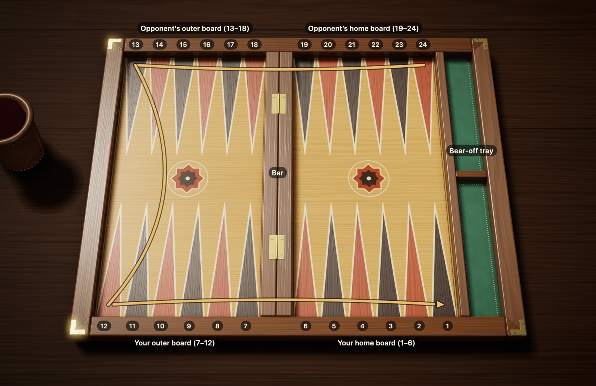
Figure 2.1The backgammon board: 24 points, four quadrants and the bar. You are at the bottom. The gold arrow shows the path of your checkers from the 24-point to the 1-point; your opponent travels the same path in the opposite direction.
Quadrants. Think of the board as a field divided into four quadrants, each with six points. The two quadrants in front of you are your side; the two across from you are your opponent’s:
Your home board (1–6): Where the journey ends. Once checkers get here, they are taken off the board. Bottom right in Figure 2.1.
Your outer board (7–12): The last stop before your home board. Bottom left.
Opponent’s outer board (13–18): The middle of the route. Top left.
Opponent’s home board (19–24): Where the journey begins. Top right.
The bar. The raised strip down the middle of the board is called the bar. It has two jobs: it separates the left and right halves of the board, and it is where hit checkers wait. It doesn’t count as a point when you count out a move: a checker moving from the 7-point to the 6-point takes just one step, even though it crosses the bar.
How the numbering works. Each player’s numbers start from their own home board. So every triangle has two names: the point you call 1, your opponent calls 24. To avoid confusion, all the numbers in this book are given from your side of the board. Checkers and Dice can also print these numbers on the board's rails: turn on “Point numbers” in the Appearance section of Settings.
Direction of travel. Your checkers always move toward lower numbers. A checker setting out from the 24-point at the top right first moves left along the top edge, turns down at the left edge, then moves right along the bottom edge until it reaches your home board. Your opponent’s checkers travel the same path the other way around, which is why the two sides meet head-on along the way.
Mirrored board. Some players like to set up their home board on the left. The whole board is then mirrored, and the checkers travel clockwise. As far as the rules go, there is no difference at all between the two setups.
2.2 Starting position
Every game begins from the same starting position. Place your 15 checkers on four points, from the farthest to the nearest, like this:
24-point, 2 checkers. The corner of your opponent’s home board. These two are your checkers farthest from home.
13-point, 5 checkers. The top left corner; the exact middle of the route.
8-point, 3 checkers. In your own outer board, two steps from your home board.
6-point, 5 checkers. The first point of your home board, next to the bar.
2 + 5 + 3 + 5 makes 15. Your opponent sets up the same pattern from their own side, so their checkers sit on your points 1, 12, 17 and 19. If you folded the board along the middle, the two sides would match exactly.
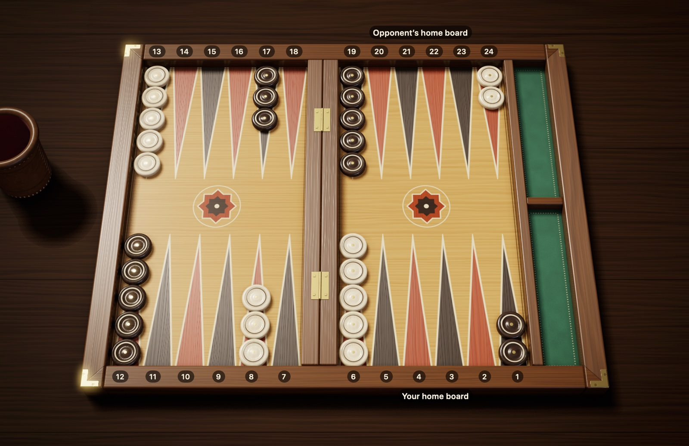
Figure 2.2Starting position: 15 checkers for each player. Your checkers are cream and your home board is at the bottom right; your opponent’s checkers are dark brown, with their home board at the top right. You have 2 checkers on the 24-point, 5 on the 13-point, 3 on the 8-point and 5 on the 6-point.
An easy way to remember it: Memorize “2-5-3-5” and set out the checkers starting from the rearmost point. A third of your checkers (5 checkers) are already in your home board; the rest are at different points along the route. Much of the game is spent bringing the checkers left behind safely home.
2.3 Starting the game
The dice decide who makes the first move. Each player rolls a single die, and whoever rolls the higher number starts. If the numbers are equal, the roll doesn’t count; both players roll again until the numbers differ.
There are two different traditions for the winner’s first move:
International rule: Nobody rolls again. The two dice on the table, yours and your opponent’s, together make your first move. If you rolled 5 and your opponent 3, you play 5-3. Since the opening dice can’t be equal, this first move is never doubles.
Common Turkish rule: The winner picks up both dice and rolls again. This roll can be anything, doubles included.
After that, the players take turns, rolling two dice each turn.
New game. Under international rules, every game starts afresh with an opening roll. In Turkish tavla, the winner of the last game usually opens.
Dice etiquette. There are a few customs when playing at a table. The dice are usually shaken in the cup and rolled into the right half of the board. A die that lands tilted, rests on a checker or jumps off the board can’t be played; the roll is repeated with both dice. Your turn begins the moment your opponent picks up their dice; a roll you make before then doesn’t count. What is described here is traditional table etiquette; tournament rules may differ in these details depending on the use of clocks, dice cups or four dice.
2.4 Turkish and international rules
In both sets, counting out moves, the dice rules and the logic of made points are the same. The differences lie in the start, the scoring and two details of play: in the common form of Turkish tavla, hit-and-run in your own home board is considered forbidden, and so is wasting pips during the bear-off when you could take a checker off. The table below follows the common rules; there may be small differences from table to table.
In Checkers and Dice you can play with either rule set. Wherever the two sets differ, this book gives both rules; all you need to do is choose which one you’ll play before the game begins.
Table 2.1 Turkish tavla and international rules
Topic
International (with cube)
Common Turkish tavla
First move
Played with the opening dice; can’t be doubles
The higher roller rolls both dice again; can be doubles
Who starts the next game
An opening roll is made in every game
The winner of the previous game starts
Hit-and-run in your own home board
Allowed
Considered forbidden (in Checkers and Dice, set for each new match; allowed by default)
Moving a checker on during the bear-off when you could bear one off (“sallamak”)
Allowed
Considered forbidden (in Checkers and Dice, set for each new match; allowed by default)
Backgammon
Yes (× 3)
No; counts as a gammon (× 2)
Doubling cube
Standard; compulsory in tournaments
None at all
Crawford rule
Standard in matches
None
2.5 The Checkers and Dice game screen
When a match starts, areas showing the state of the game appear around the board. Figure 2.3 was captured during your turn; the numbers are explained below it.
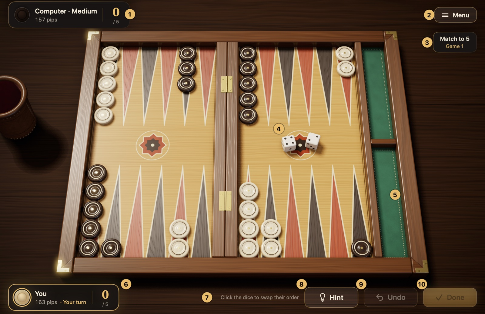
Figure 2.3The Checkers and Dice game screen. The numbered items are explained in the list below.
Opponent’s card: Shows your opponent (with the difficulty level, as in “Computer · Medium”), their pip count and their score in the match. “Thinking…” appears while the computer is thinking.
Menu: Pauses the game. The card that opens lets you resume, open the settings or the “How to Play” card, see the move history and your matches, resign or leave the match. The Esc key does the same.
Match info: Shows how many points the match is played to (in a session it says “Session”) and which game you are in. Under international rules, the cube indicator sits below it.
Dice: Your dice land in the right half of the board, the computer’s in the left half.
Bear-off tray: The green tray on the right of the board. Your borne-off checkers line up in its lower half, your opponent’s in its upper half.
Your card: Shows your pip count, your match score and, when it’s your turn, the “Your turn” notice.
Hint line: Briefly tells you what you can do at that moment. If you try an illegal move, this is also where you read why, for example “This checker can't move with these dice.”
Optional buttons. If you turn them on in Settings, three more buttons appear at the bottom right: “Hint” marks on the board the move suggested by the Master engine (⌘I); “Undo” takes back the steps you’ve played this turn (⌘Z); and “Done,” when auto-confirm is off, ends your turn and passes it to your opponent (Return). Details in section 5.3.
Before you start. In the New Match panel you choose the difficulty level, the rule set (Turkish tavla or international), the match length or, under international rules, a session, and the color of your checkers. These choices apply for the whole match; details in section 5.1.
How does a turn work? When it’s your turn, the dice are rolled for you and pour out of the leather cup onto the board; under international rules, on a turn when you could double, the app waits and you roll with the “Roll Dice” button or the Space bar. You move a checker by dragging and dropping it, or by clicking first the checker and then the point it should go to; the checkers you can move glow, and the points they can reach are marked with rings. Once you play your last step, your turn ends and passes to your opponent. If you’d rather roll every turn yourself, confirm your turn with “Done” or take steps back, you choose these in Settings; details in section 5.3. The app won’t accept an illegal move anyway.
What does the pip count tell you? The pip count on the cards is how many more points that player must travel to bring all their checkers home and bear them off. The player with the lower count is ahead in the race. Details in section 4.2.
Chapter 3
The rules of the game
This chapter covers all the rules of the game in order: moving the checkers, doubles, forced moves, hitting and entering from the bar, bearing off, scoring and the doubling cube.
3.1 Moving the checkers
The player whose turn it is rolls two dice and moves checkers forward by the numbers on the dice. This section explains step by step how to play a roll.
Reading the dice
The dice tell you how many points your checkers move. A die showing 4 means one checker moves 4 points. When counting, you don’t count the point the checker is standing on; you start from the next one. A checker on the 13-point playing a 4 counts 12, 11, 10, 9 and lands on the 9-point.
Backgammon has no reverse gear: a checker can only move toward lower-numbered points, that is, closer to its home board.
Two dice, two separate moves
Think of the two dice you’ve rolled as two separate moves you’re entitled to. When you roll 5-3, you can use them however you like:
You can play the 5 with one checker and the 3 with another.
You can give both to the same checker and move it 8 points in total; you can play either the 3 first or the 5 first.
When you play both dice with one checker, the checker actually makes two separate hops and briefly touches down on the point where the first hop ends. That intermediate point must also be a point the checker can land on. You can’t count the total of the two dice in one go and skip the point in between.
Figure 3.1Two ways to play a 5-3. Green arrows, option 1: 8→3 (5) and 6→3 (3); two different checkers make the 3-point. Blue arrows, option 2: 24→21 (3), then 21→16 (5); the same checker moves 8 points in total. That checker can’t play the 5 first: the 19-point, framed in red, is a point your opponent has made and can’t serve as an intermediate point.
The reverse is also true: you can’t split a single die into parts. Sharing a 5 between two different checkers as a 3 and a 2 is against the rules; each die belongs, whole, to a single checker.
Where can a checker land?
When you move a checker, the state of the destination point matters. There are four possibilities:
Table 3.1 Can a checker land on the destination point?
What is on the destination point?
Can a checker land there?
No checkers (an empty point)
Yes
One or more of your own checkers
Yes, with no limit on the number
A single opposing checker (a blot)
Yes, and the opposing checker is hit
Two or more opposing checkers (a made point)
No
Figure 3.2Open points and a made point. For the checker on the 11-point: the 10-point is empty, so it can land there. The 8-point holds your own checkers; you can add as many as you like. The 7-point holds a single opposing checker (a blot); you can land there, and that checker is hit. The 9-point, framed in red, holds two opposing checkers (a made point): the dashed red arrow shows that you can’t land there.
A point where two or more of a player’s checkers stand together is called a made point. Think of it as a roadblock: your opponent can neither land on it nor touch down on it as the intermediate point of a two-dice move. Making your own points wisely is the most effective way to narrow your opponent’s path.
3.2 Doubles
When both dice show the same number (from 1-1 to 6-6), you get a bonus: you use that number not twice but a full four times. A player who rolls 5-5 makes four separate moves of 5 and moves 20 points in total. These rolls are called doubles.
You can split the four moves however you like: once each for four different checkers, twice each for two checkers or four times for a single checker. If one checker takes more than one step, every intermediate point it touches down on must be open.
Figure 3.3Doubles: four moves with 4-4. Move the two checkers on the 24-point to the 20-point (4 + 4) and bring two checkers down from the 13-point to the 9-point (4 + 4). Each of the four moves is 4 points; you can split them among whichever checkers you like.
3.3 Forced moves
Once you’ve rolled, you have no right to say “I’ll skip this turn.” If the dice allow a move, you must make it. These questions help you work out which dice you must use, and how many:
Is there a move that uses both dice? If so, you must make it. If the first move that comes to mind leaves one die unused, look for another way that fits both dice.
Can only one die be played? Then you use the one that can be played, and the other is forfeited.
Can each die be played on its own, but not both together? Then the choice isn’t yours: you use the higher die. Figure 3.4 shows this.
Can neither die be played? Your turn is lost, and it’s your opponent’s turn to roll.
Did you roll doubles? If not all four moves fit, you must make as many moves as can legally be played; if the order of the moves affects that number, you must choose the order that lets you play more. The rest are forfeited.
Figure 3.4The higher-die rule: 6-5. The checker on the 14-point can go to the 8-point with the 6 (green arrow) or to the 9-point with the 5 (dashed arrow), but it can’t play both: either way, the second step lands on the 3-point (red frame), a point your opponent has made. Your other checkers, deep in your home board, can’t play either die. When the dice can be played separately but not together, the higher die is played: 14→8.
As a result of these rules, sometimes there is only one move you can make; this is called a forced move. In digital backgammon the app itself enforces these rules and won’t allow an illegal move; on a real board, it’s up to you to pay attention.
3.4 Blots and hitting
What makes backgammon exciting is hitting. First, you need to tell two situations apart:
Blot: A checker left alone on a point. It is unprotected; if your opponent lands on it, it is knocked off its point.
Made point: A point shared by at least two checkers of the same color. Checkers standing there can’t be touched.
When you bring a checker down on the point where your opponent’s blot stands, you have hit that blot. The hit checker is lifted off its point and placed on the bar in the middle. For your opponent this is a serious setback: the checker has to start its journey all over again, and until it returns to the board, your opponent’s hands are tied.
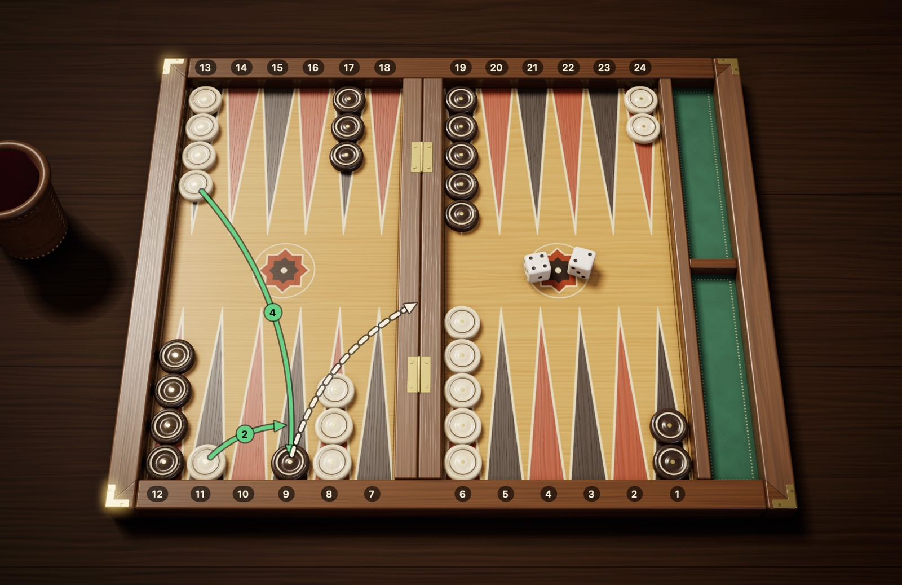
Figure 3.5Hitting: a blot is hit with 13→9. With the 4, 13→9: you land on your opponent’s single checker and hit it; the hit checker goes to the bar (dashed arrow). With the 2, 11→9: you bring a second checker there too and make the 9-point; now you can’t be hit.
What you need to know:
Hitting is not compulsory. Even when you could hit a blot, you can choose to make a different move.
After hitting, you can carry on with the same checker. For example, with 4-2 you can move a checker 4 points to hit, then move the same checker on another 2 points. This is called “hit-and-run.” Under international rules it is allowed anywhere on the board; in the common form of Turkish tavla and in Greek portes, however, running on with the same checker after hitting in your own home board is forbidden. In Checkers and Dice, when you play by Turkish rules, you can turn this restriction on with the “No hit-and-run” option in the New Match panel; it is off by default.
You can hit more than one blot in the same move; for example, a checker can hit one blot at the intermediate point of the two dice and another where it lands.
The same rules apply to you. A checker you leave as a blot is hit if your opponent’s roll reaches it. So whenever possible, try to keep your checkers in pairs.
3.5 Entering from the bar
When one of your checkers has been hit, there is only one item on your agenda when your turn comes: getting that checker back onto the board. As long as you have a checker waiting on the bar, your other checkers are frozen.
Where does it enter? A checker on the bar starts its journey over, that is, from your opponent’s home board. The die decides which point it enters on. Count your opponent’s home board from 1 to 6, from the edge toward the bar: with a 1 you enter on the point in the corner of the board, with a 6 on the point next to the bar. In your numbering:
Table 3.2 Where a checker on the bar enters, by die
Die
Entry point
1
24
2
23
3
22
4
21
5
20
6
19
The point shown by the die may be empty, it may hold your own checkers, or a single opposing checker may be standing there. In all three cases you enter; in the last case you hit that checker as you come in. Only a point your opponent has made is closed to you.
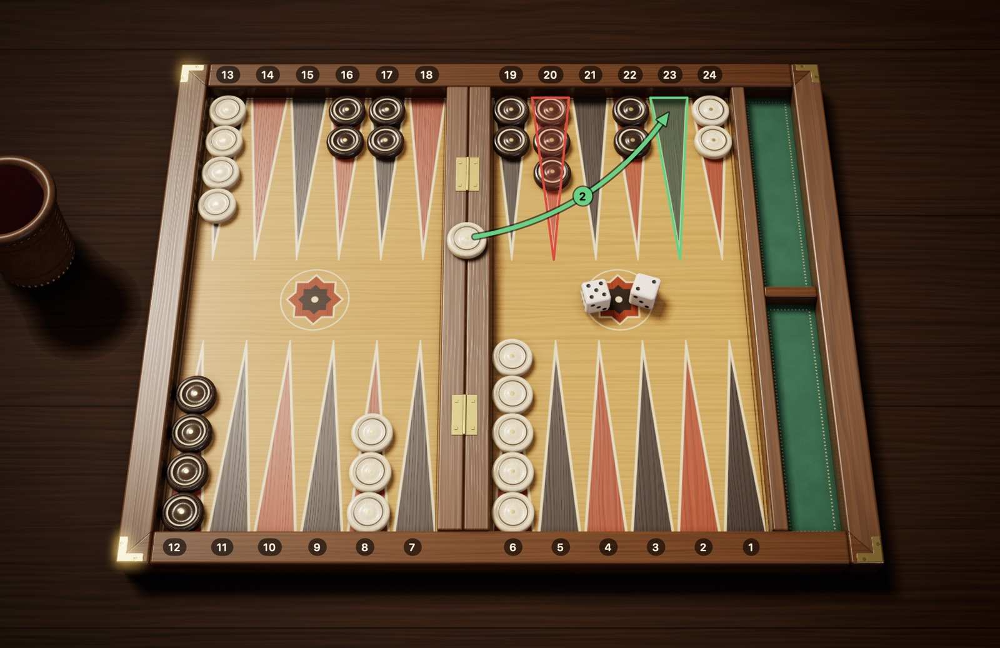
Figure 3.6Entering from the bar: 5-2. Your checker on the bar enters in your opponent’s home board: with a 1 on the 24-point, with a 2 on the 23-point … with a 6 on the 19-point. You can’t enter with the 5: your opponent has made the 20-point (red frame). With the 2 you enter on the empty 23-point (green frame). Once you’ve entered, you play the 5 with another checker or with the one that just came in.
Entering, step by step:
Roll the dice and see which point in your opponent’s home board each die corresponds to.
If at least one of those points is open to you, place your checker there.
Entering uses one die. The other die is free; you play it with any checker you like, including the one that has just entered.
If you have two checkers on the bar, both dice go to entering them. If only one can enter, you bring that one in; since the second checker is still waiting on the bar, you can’t make any other move that turn.
You enter with a single die. Say you roll 5-2; your opponent has made the 20- and 23-points, and the 18-point is empty. You can’t add the two dice together, count 7 points and come straight down on the 18-point. The checker must first enter on an open point in your opponent’s home board with a single die; here both are closed, so there is no entry.
Dancing
If your opponent has made both points shown by your dice, your checker on the bar stays out that turn. When this unlucky roll happens, you are said to dance. Since no other checker can move while you have one on the bar, your turn is lost; you try your luck again on your next turn.
Being closed out
The worst case is when all six points of your opponent’s home board are made. Then there is no entry point, whatever the dice show; this is called being closed out. Until your opponent breaks one of those points, your turn passes without a move every time; at the table you don’t even need to roll, and the turn passes straight to your opponent. It’s the same in Checkers and Dice: no dice are rolled, the screen shows “Closed out” and the turn passes straight to your opponent.
Figure 3.7Closed out: your opponent’s home board is completely closed. Your checker on the bar could enter on any open point from 19 to 24, but all six points are made (red frames). This is called being closed out: until your opponent opens one of those points, your turn passes without a roll.
3.6 Bearing off
The home stretch of the race is taking your checkers off the board; this is called bearing off. There is one precondition: all your checkers on the board must be in your home board, that is, on points 1–6. If even a single checker is outside it or waiting on the bar, you can’t start bearing off.
The basic rule
The rule is simple: the number on the die shows which point you take a checker from. With a 6 you lift a checker off the 6-point, with a 2 off the 2-point, and put it in the space at the edge of the board. A checker that has been borne off has left the game for good.
Figure 3.8Bearing off: two checkers with 6-4. With the 6 you take a checker from the 6-point and with the 4 one from the 4-point, and put them in the bear-off tray on the right. Bearing off can only begin when all 15 checkers are in your home board.
If there is no checker on the die’s point
Sometimes the point shown by the die is empty. Then ask these two questions in order:
Do I have a checker on a higher-numbered point? If so, you can’t use that die to bear off from a lower point; you play the die by moving a checker, usually one on that higher point.
No checkers on any higher point? Then you bear off a checker from the highest point on which you have one. For example, if your farthest checker is on the 4-point, either a 6 or a 5 bears that checker off.
Figure 3.9Bearing off: with a checker higher up, you move it. For the 5: the 5-point is empty, but there is a checker on the higher 6-point; you can’t use the 5 to bear off from the 3-point or the 1-point. You play the 5 by moving a checker from the 6-point (6→1), and with the 1 you bear off a checker from the 1-point. Another way: first 6→5 with the 1, then bear that checker off from the 5-point with the 5. The bear-off tray already holds 10 checkers borne off earlier.Figure 3.10Bearing off: from the highest point. You have no checkers left on the 6- and 5-points or higher. So with each die you bear off one checker from the highest occupied point, the 4-point.
You don’t have to bear off
If you have another legal move, you don’t have to take a checker off. Moving checkers forward inside your home board and leaving the bear-off for later is called “sallamak” in Turkish. Sometimes this is the wisest choice, so as not to leave your opponent a blot to hit. You may also move a checker with one die and bear the same checker off with the other. This freedom belongs to the international rule; in the common form of Turkish tavla, moving a checker forward with the lower die and wasting pips when you could bear a checker off is considered forbidden. In Checkers and Dice, when you play by Turkish rules, you can turn this restriction on with the “Must bear off” option in the New Match panel; it is off by default.
If you are hit while bearing off
If your opponent still has a checker waiting in your home board, a blot you leave while bearing off can be hit. Bearing off then stops: the hit checker must first enter in your opponent’s home board and travel around the board back to your home board. Once all your remaining checkers are gathered in your home board again, you carry on from where you left off.
3.7 End of the game and scoring
The first player to bear off all their checkers wins the game. The size of the win, though, depends on how far behind your opponent is at the moment the game ends. When the game is over, look at your opponent’s checkers; one of the three cases below will apply:
Table 3.3 Game results and points
Result
Opponent’s position
International, no cube
International, with cube
Turkish tavla
Single game
Has borne off at least one checker
1
Cube value × 1
1
Gammon
Has borne off no checkers
2
Cube value × 2
2
Backgammon
Has borne off no checkers and still has a checker on the bar or in your home board
3
Cube value × 3
2 (counts as a gammon)
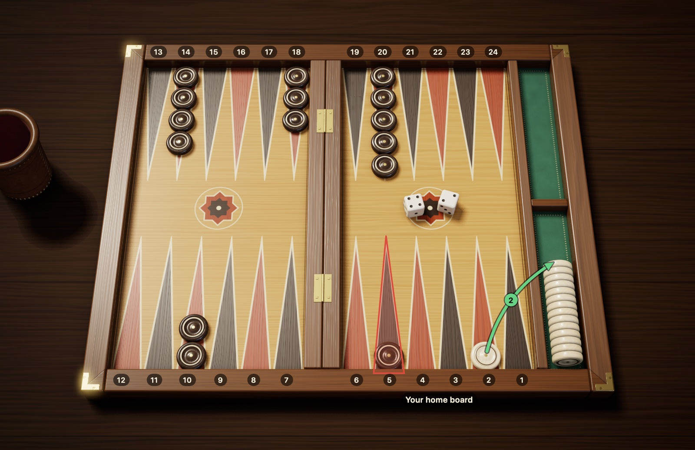
Figure 3.11Backgammon: your opponent has borne off nothing and has a checker in your home board. You bore off your last checker with a 2 and won the game. Your opponent hasn’t borne off a single checker: that alone means a gammon (2 points). What’s more, they still have a checker on the 5-point, framed in red, which is in your home board: a backgammon (3 points).
Examples:
If your opponent has borne off 4 checkers when you bear off your last one, you win a single game: 1 point.
If your opponent hasn’t borne off a single checker but has none left on the bar or in your home board, you win a gammon: 2 points.
If your opponent hasn’t borne off any checkers and still has one on the bar or in your home board, you win a backgammon: 3 points.
With the doubling cube on 8, a player who wins a gammon scores 8 × 2 = 16 points.
In Turkish tavla a backgammon is not a separate result; that situation also counts as a gammon and is worth 2 points. Make it clear which rule set you’re playing before the game.
Match score. Backgammon is usually played not as a single game but up to a set number of points; in tournaments this is usually 5, 7 or 11 points. At the end of each game, the winner’s points are added to their score; when playing with the cube, the points are multiplied by the cube value. The first to reach the target score wins the match. That is why winning a gammon, or saving one, can change the outcome of the match.
3.8 The doubling cube
The doubling cube is a cube with numbers on it that is never rolled. Its faces show 2, 4, 8, 16, 32 and 64, and it simply shows the current value of the game. You rarely see it in neighborhood games in Turkey, but it is indispensable in international tournaments and online matches. Checkers and Dice has the doubling cube too; it is used when you choose the international rule set at the start of the game. Doubling and responding to a double are covered in section 5.4. If you’re going to play without the cube, you can skip this section.
Where the cube sits and what it means
At the start of the game the cube sits between the two players with 64 on its top face. Since the cube has no 1, the 64 here means “not doubled yet; the game is worth 1 point.” While the cube is in the middle, either of you can make the first offer. Once an offer has been accepted, the player the cube sits in front of is the one who has the right to make the next offer. In Checkers and Dice the cube is shown below the match info at the top right: at first it reads “1 Cube centered”; once a double has been taken, it shows the cube’s value with “Cube yours” or “Cube theirs.”
Doubling, step by step
When? You can only make an offer on your own turn, before you touch the dice. Once the dice are rolled, the chance for that turn has passed.
How? If you think your position is good, you turn the cube to the next value (2 the first time), hold it out to your opponent and say “Double.” It means: “Shall we play this game for twice the stakes?”
What can your opponent do?
Take: They take the cube to their side with the doubled value (2 on the first double) facing up; the game continues from the same position, now at twice the value.
Drop: They concede the game on the spot. The points they lose are the cube’s value before the offer; on the first offer that is 1 point.
Whose is the next offer? The cube passes to the player who accepted the offer, and only that player has the right to the next double. That is why offers always alternate; the same player can’t double twice in a row.
Example
Say your opponent doubled early in the game and you took; the cube is on 2, in front of you. A few turns later the game swings your way, so you turn the cube to 4 and offer it to your opponent. If they drop, you win the game and score 2 points. If they take, the cube moves in front of them on 4, and the points won at the end of the game are read from the “4” row of Table 3.4.
Table 3.4 Points won by cube value
Cube
Single game
Gammon
Backgammon
Centered (1)
1
2
3
2
2
4
6
4
4
8
12
8
8
16
24
What you need to know:
There is no ceiling on doubling; after 64 the value keeps doubling to 128, 256 and so on. Still, values this high are very rare.
If you hold the right to double, having a checker waiting on the bar doesn’t stop you from making an offer. In Checkers and Dice the only exception is being closed out: while your opponent’s home board is completely closed, your turn passes without a roll, and you can’t double that turn either.
Whether to double, and whether to accept, are among the most important skills in the game; guidelines follow under the next heading.
Cube decisions
Using the cube well is one of the subtlest skills in backgammon. What follows are not hard rules but sound guidelines to start with.
When to take: When you are doubled, ask yourself roughly this: “If I played this game four times, would I win at least once?” If your chance of winning is about one in four or better, taking is usually right. When you drop, your loss is certain; when you take, you keep the chance to turn the game around and later use the cube in your own favor. This 25% guideline comes from the simplest model, which ignores gammons and redoubles: owning the cube pulls the threshold down a little, the risk of a gammon pushes it up, and the match score can move it either way.
When to double: If your position is clearly better but the game isn’t over yet, it’s time to double. Avoid three mistakes:
Doubling too early: A double offered with only a small edge gives your opponent both an easy take and ownership of the cube.
Doubling too late: Your position gets so good that your opponent no longer takes and gives up the game for 1 point, whereas if you had doubled a turn earlier, they would have taken and you would be playing for twice the stakes. This is called “losing your market.”
Too good to double: A position can be so strong that your opponent would certainly refuse a double. If what you expect to win by playing on without the cube, thanks to your gammon chances, is more than the 1 point your opponent’s drop would give you, the position is “too good to double.” This guideline doesn’t hold in sessions played with the Jacoby rule; there, since a gammon counts only 1 point if no one has doubled, you need to turn the cube. In match play, too, the score changes the value of a gammon.
The 8-9-12 rule in a pure race. Once contact is over and the game is just a pip race, the pip count makes the decision. Work out the difference as a percentage by dividing it by the pip count of the player who is ahead; if you’re the one behind, divide by your opponent’s count, the leader’s:
Table 3.5 The 8-9-12 rule in a pure race
Pip difference (relative to the leader’s count)
Decision
8% ahead
Consider the first double
9% ahead
If you own the cube, redouble
Up to 12% behind
Take if you are doubled
More than 12% behind
Drop
Example: if your pip count is 80 and your opponent’s is 88, you are 8 pips ahead; that is 10% of 80, the leader’s count, and you are in doubling territory. Because the rule is based on the raw pip count, be a little more careful if you have piled your checkers on low points. The rule applies when it is your turn, once contact is completely over, and in medium or long races; when the game is down to its last few checkers, you need to look at where the checkers are rather than at percentages and, in a match, weigh the score separately.
Match and session rules
Crawford rule: The first time one player in a match comes within one point of the target (4 points in a 5-point match), the cube is not used in the very next game; this is called the Crawford game. Once that game is over, the cube comes back into use and is available until the end of the match. The rule applies only once per match; if the other player later reaches the same score, there is no new Crawford game. The aim is to stop the trailing player from doubling every game straight away and closing the gap in a single game. The rule is named after the American player John R. Crawford.
Optional rules (found in sessions, not used in matches):
Automatic doubles: If the opening dice are the same, the cube is turned to 2 automatically and stays in the middle. This is usually limited to once per game.
Beaver: A player who has been doubled can, while accepting, immediately double the cube once more, and the cube still stays with them. The player who doubled can take the beaver or drop; dropping costs the value of the double they offered, which is 2 points on the first double.
Raccoon: The player facing a beaver, that is, the one who made the first double, can immediately double the value once more. The cube still stays with the player who accepted the double; the other side either accepts the new value or gives up the game at the current value. Like the beaver, it is found only in sessions.
Jacoby rule: If no one has doubled during the game, gammons and backgammons count only 1 point. This encourages the leading player to double rather than chase a gammon.
Chapter 4
Playing better
The basics of playing well, once you know the rules: a sample game, pip counting, opening moves, game plans, the risk of leaving a blot and bearing-off strategy.
4.1 Sample game: the first five turns
To see the rules working together, let’s follow the first five turns of a game step by step. The board is in the starting position, and we’re playing by international rules. Point numbers are given from your side.
Opening roll. You roll 3 and your opponent rolls 1. You rolled higher, so you play this 3-1 as your first move. With the 3 you play 8→5, and with the 1, 6→5, making the 5-point. This is one of the most commonly recommended opening moves.
Your opponent rolls 6-4. They run one of their back checkers: the checker on your 1-point goes to 7 with the 6 and on to 11 with the 4. The checker is left alone on 11, so it is a blot.
You roll 4-2. With the 2 you play 13→11 and hit your opponent’s blot; their checker goes to the bar. With the 4 you play 24→20.
Your opponent rolls 5-5. With a checker on the bar, they must enter it first. With a 5 they would have to enter on your 5-point, but you have made that point. Since all four dice are 5s, your opponent has danced; they can’t move a single checker this turn.
You roll 6-5. You take the checker left on the 24-point to 18 with the 6 and on to 13 with the 5. The 18-point is empty, so the intermediate point is open; you already have checkers on 13.
After five turns, the board looks like Figure 4.1:
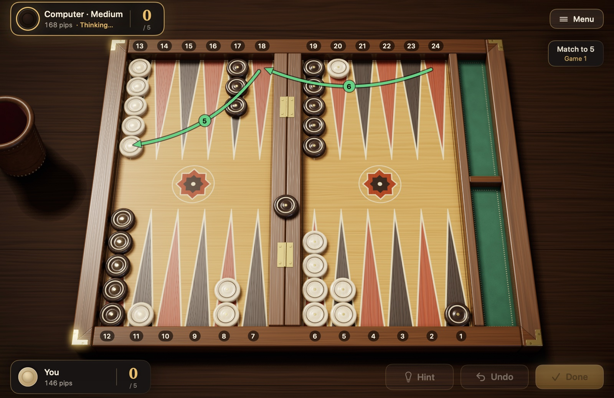
Figure 4.1Sample game: the position after the fifth turn. Last turn: with 6-5, the checker on the 24-point ran first to 18, then to 13 (green arrows). One of your opponent’s checkers is waiting on the bar; your made 5-point makes it harder for that checker to enter. Your blots are on 20 and 11. Pip counts on the player cards: you 146, your opponent 168; it’s your opponent’s turn.
These five turns used the rules for moving, making points, hitting, entering and dancing. The game goes on this way until the two sides have brought their checkers into their home boards and borne them off.
4.2 Pip counting
Because backgammon is a race, the question “who is closer to home?” matters a great deal at any moment in the game. The measure of this is the pip count: the total number of points a player’s checkers must travel to reach the home board and be borne off.
How is it calculated? Each checker’s distance is the number of its point in your own numbering. A checker on the 6-point is 6 pips away, one on the 13-point 13 pips. A checker on the bar is as far away as it can be and counts as 25. You add up the distances of all your checkers.
For example, at the start: 2 × 24 + 5 × 13 + 3 × 8 + 5 × 6 = 48 + 65 + 24 + 30 = 167 pips. Both players start the game with 167. With every move your count goes down by the distance the checker actually travels (when you bear off from the highest point with a larger die, the count drops by the number of the checker’s point, not by the value of the die); a checker that is hit, on the other hand, goes back to the bar and sends its owner’s count up in one go.
In Checkers and Dice you don’t need to work this out. The pip count on the player cards updates automatically after every move. In the sample game in section 4.1, you are on 146 pips and your opponent on 168; in other words, you are about three rolls ahead.
What is this good for?
If you’re ahead, avoiding contact and heading home quickly is usually a good plan.
If you’re behind, it’s hard to win by racing alone; you watch for chances to hit your opponent’s checkers or block their path.
If you’re playing with the cube, the pip difference determines your cube decisions in a pure race. What to do at which difference is explained under the heading “Cube decisions” in section 3.8.
4.3 Opening moves
Since the first move of the game is always made from the same position, the good plays for each roll have largely been settled by computer analysis. Table 4.1 gives the widely accepted plays for games under international rules in which the match score is not taken into account; in a match, the score can change some choices. The notation is “from/to”: 8/5 means from the 8-point to the 5-point; (2) shows that the same move is made with two checkers.
Table 4.1 Opening moves under international rules
Roll
Recommended play
Reasonable alternative
The idea
3-1
8/5 6/5
—
Making the 5-point
4-2
8/4 6/4
—
Making the 4-point
6-1
13/7 8/7
—
Making the 7-point, blocking the way in front of your home board
5-3
8/3 6/3
—
Making the 3-point
6-5
24/13
—
Bringing one back checker to safety in a single move
6-4
24/14
24/18 13/9 or 8/2 6/2
The three plays are almost equal in value
6-3
24/18 13/10
24/15
Developing from both the back and the middle
6-2
24/18 13/11
24/16
Developing from both the back and the middle
5-4
24/20 13/8
13/9 13/8
A potential anchor at the back, a new checker in the middle
5-2
13/8 24/22
13/8 13/11
Safe development from the middle
5-1
13/8 24/23
13/8 6/5
A safe checker, splitting the back checkers
4-3
13/10 13/9
24/21 13/9 or 24/20 13/10
Bringing down builders for your home board
4-1
24/23 13/9
13/9 6/5
Splitting the back checkers, a new checker in the middle
3-2
24/21 13/11
13/11 13/10
Splitting the back checkers, a new checker in the middle
2-1
13/11 6/5
13/11 24/23
Slotting the 5-point or splitting the back checkers
The plays in Table 4.1 are based on the computer analyses on the Backgammon Galore website. The plays in the “Reasonable alternative” column are good too; in the analyses the difference between them is very small, and you can choose according to your style of play. Beginners who want to play safe may prefer 13/11 24/23 for 2-1 and, for 6-4, 8/2 6/2, which leaves no blot at all. For comparison: the blot left by 24/14 is hit by 11 of the 36 rolls; at least one of the two blots left by 24/18 13/9 is hit by 27 of the 36.
Under the international rule, the first move is never doubles. If you’re playing by the Turkish rule, the first roll can also be doubles; in that case these plays make a good start:
Table 4.2 Opening doubles under the Turkish rule
Doubles
Recommended play
6-6
24/18(2) 13/7(2)
5-5
13/3(2)
4-4
24/20(2) 13/9(2)
3-3
8/5(2) 6/3(2)
2-2
13/11(2) 6/4(2)
1-1
8/7(2) 6/5(2)
You don’t need to memorize these tables. But it’s instructive to see the logic they share: if possible, make a new point in your home board or just in front of it; if you can’t, get your back checkers moving, and don’t leave single checkers where they are easy to hit.
4.4 Basic game plans
Most backgammon games turn into one of a few familiar plans. Which one suits you depends on the pip difference and the points made on the board. It’s also normal to switch from one plan to another as the game goes on.
Running game: If you’re ahead in the pip count, you break contact with your opponent and bring all your checkers home quickly. Once contact is over, the game becomes a pure dice race, and the player ahead usually wins.
Holding game (anchor): You hold a point in your opponent’s home board with two checkers. This “anchor” protects you from being hit and gives you a chance to hit your opponent if they leave a blot on their way home. If you’re behind, it’s the soundest plan.
Priming game: By making points side by side, you build a barrier in front of your opponent’s back checkers. If six points are made in a row, a checker behind them can’t get past with any roll; you slowly move the prime toward your home board and squeeze your opponent.
Blitz: You hit your opponent’s checkers again and again as they enter your home board, and close your home board fast. A successful blitz closes your opponent out and often wins a gammon; but if it fails, you leave blots of your own behind.
Back game: When you’re far behind, you hold two anchors in your opponent’s home board and wait for them to leave a blot as they come home. It’s a rescue plan, not a starting point you would choose on purpose.
These are rules of thumb, not mechanical rules. Timing, the quality of your points, the state of your back checkers and the risk of a gammon can call for the opposite of what the pip difference suggests: giving up a strong prime right away just because you have a big pip lead is a mistake, and so is ending a blitz that’s going well just because you’re behind.
4.5 The risk of leaving a blot
Sometimes you can’t avoid leaving a checker on its own. Then the question is: where can I leave it so that it’s least likely to be hit? The answer depends on how many points away the blot is from the opposing checker that could hit it.
Figure 4.2The chance of a blot being hit, by distance. A blot 6 points away is in the most danger; from 7 on, the risk drops sharply. The bars show how many of your opponent’s 36 possible rolls hit your blot (assuming no made points in between).
There are three practical lessons to draw from Figure 4.2:
The most dangerous distance is 6. A blot 6 points away is hit by 17 of the 36 rolls, almost one roll in two.
7 and beyond is much safer. To hit a checker at this distance, both dice have to work together; the risk drops from nearly one in two to one in six and below.
Close is not always safe. Even a blot 1 point away is hit by 11 of the 36 rolls.
These numbers assume a single opposing checker, a path with no made points in between and no opposing checker waiting on the bar. If more than one opposing checker bears on the same blot, the risk goes up; if your made points block the intermediate points, it goes down. Because of doubles, distances such as 12, 16, 20 and 24 can also be reached in special ways; the risk does not fall smoothly with distance.
4.6 Bearing-off strategy
The bearing-off rules are simple, but bearing off well is a skill. From the same position, two players making different decisions can end up a roll or two apart; in a close race, that difference decides the game.
Bringing checkers home
Bring checkers in on the high points of your home board. As checkers come in, try to place them on the 6-, 5- and 4-points. Checkers piled up early on the 1- and 2-points will make you waste big numbers later.
Spread them evenly. Spreading your checkers across the points lets you bear off a checker whatever you roll. Empty points, on the other hand, mean you can’t bear off a checker when that number comes up.
Don’t go deep for no reason. Taking a checker that has come home all the way to the 1-point, just to “move it on a bit,” means that once bearing off starts, a big number like a 6 is worth only 1 pip.
With no contact
Once your opponent’s checkers have passed all of yours, there is no longer any chance of being hit and the game is a pure race. The basic principle then is: bear off as many checkers as you can every turn. Computer analysis shows this is the best play in almost every position; only with very uneven distributions can it be better to rearrange a checker inside your home board so that later rolls are wasted less. If you can’t bear a checker off, use the die to fill empty points. If you roll doubles, don’t miss the chance to bear off four checkers at once.
With contact
If your opponent still has one or two checkers in your home board, bearing off is not a speed race but a safety game. A single blot gives your opponent a chance to turn the game around.
Clear from the back. Clear the checkers on your highest points first. Checkers waiting close to an opposing checker are the most dangerous ones.
Keep even numbers of checkers. If you keep checkers in twos and fours on your points, you can clear them two at a time with both dice and empty a point without leaving a single checker behind. On a point with an odd number, one checker is often left on its own.
Try to fill the gaps. Empty points in your home board can force you to leave a blot on later rolls.
Move within your home board if you have to. If bearing a checker off would leave a blot, it’s often better to shift checkers inside your home board and stay safe.
The same principles apply if you have started bearing off while an opposing checker you hit is waiting on the bar: your opponent can come in and hit your blot at any moment, so keep your home board as closed as you can while you bear off.
4.7 Tips for beginners
Once you’ve learned the rules, these simple principles will help you in your first games:
If you must leave a blot, choose where. A single checker is sometimes unavoidable; then leave it where your opponent can hit it with the fewest rolls, preferably 7 or more points away.
Value the points in your home board. Every point you make in your home board makes it harder for an opposing checker you’ve hit to come back in. The 5- and 4-points are the most valuable.
Don’t stack your checkers in one place. Piling five or six checkers on one point means those checkers sit there doing nothing. Take checkers from the stacks and use them to make new points.
Stay flexible. Checkers standing at different distances make most future rolls useful. Avoid a setup that depends on the same numbers.
Think from your opponent’s side too. Before you move, take a quick look at what your opponent could do with their next roll.
Don’t rush. Compare a few options for every roll. In Checkers and Dice a step you’ve played can’t be taken back by default. If you want to try different moves, turn on “Show the Undo button” and turn off “Auto-confirm moves” in Settings; details in section 5.3.
Learn from the games you lose. In backgammon, luck can decide a single game; but if you keep making the same mistake, the problem isn’t the dice.
Chapter 5
Using Checkers and Dice
This chapter answers, step by step, the question of how to do things in Checkers and Dice, from setting up a match to the settings and the practice tools. Button and menu names are given exactly as they appear in the app.
5.1 Starting a new match
On the main menu, press “New Match” (⌘N). The panel that opens has five choices; “Start” starts the match.
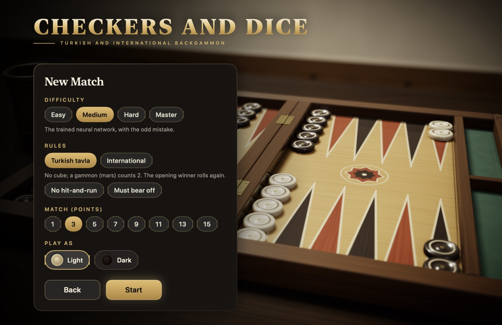
Figure 5.1New match panel: difficulty, opponent style, rules, match or session and checker color.
Difficulty: “Easy” makes frequent mistakes and is ideal for learning. “Medium” is a trained neural network that makes the odd mistake. “Hard” is a neural network trained on millions of games. “Master” also calculates every possible roll.
Opponent style: “Balanced,” “Aggressive,” “Cautious” or “Runner.” A balanced opponent plays the best move. The other three choose by their own leaning among moves that differ only very slightly: the aggressive one prefers hitting and making points, the cautious one prefers not leaving a checker exposed, and the runner prefers escaping its back checkers; the cost of this is small. The style affects only the computer’s choice of move; the hint, the Coach and the analysis always rely on the best move. The chosen style is saved with the match.
Rules: “Turkish tavla” or “International.” The differences are in Table 2.1. With Turkish tavla selected, two traditional rules appear below: “No hit-and-run” and “Must bear off.” Both are off by default. The rules you choose stay the same for the whole match.
Match or session: With “Match (points)” you choose how many points the match is played to: 1, 3, 5, 7, 9, 11, 13 or 15. Under international rules there is also a “Session” tab next to it: a session has no match length, each game’s points are recorded, and you end the session whenever you like. In a session the “Jacoby rule,” “Beaver,” “Raccoon” and “Automatic doubles” options also appear; what they are is explained under the heading “Match and session rules” in section 3.8. Turkish tavla has no sessions.
Play as: “Light” or “Dark.” Whichever you choose, your checkers are always at the bottom. The icon’s color comes from the checker style you chose in Settings: with “Red & Black Lacquer,” the light checker is red.
If you start a new match while one is in progress, the app asks first. The match in progress is saved; you can go back to it from the “Matches” card. The confirmation card also shows a summary of the match about to start. ⌘N brings up the same confirmation, between games too.
5.2 Rolling the dice and moving checkers
When it’s your turn, the dice are rolled for you: they pour out of the leather cup onto the right half of the board. Under international rules, if you have the right to double, the app waits; the “Roll Dice” button appears in the right half of the board, with the “Double” button below it. You roll by pressing the button, clicking the dice or pressing the Space bar. If “Roll automatically” is off in Settings, the “Roll Dice” button appears on every one of your turns.
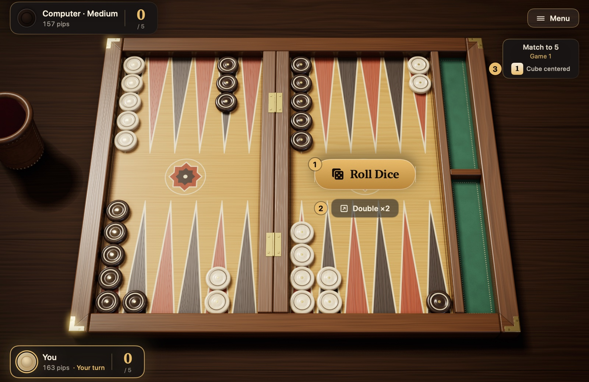
Figure 5.2Your turn to roll, when you have the right to double. 1 the “Roll Dice” button, 2 the “Double” button, 3 the cube indicator.
After the dice are rolled, the checkers you can move glow. You move a checker in one of these ways:
By clicking: First click the checker; the points it can move to are marked with green rings. Then click the target. A target where you would hit your opponent’s blot is marked with a red crosshair.
By dragging: Pick up the checker and drop it on the target.
Quickly: A double-click plays the checker with the higher die, a right-click with the lower die.
With the keyboard: Tab moves between the checkers you can move, the arrow keys choose the target and Return plays the move.
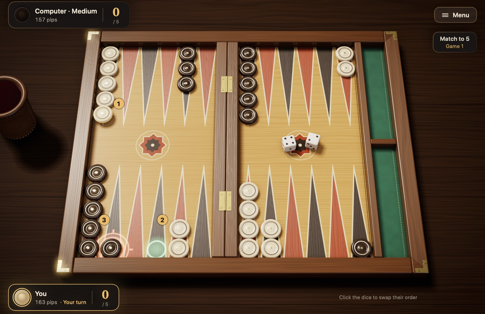
Figure 5.3Making a move. The roll is 4-2 and the checker on the 13-point is selected. 1 the selected checker, 2 the empty point it can reach with the 4 (green ring), 3 the point where it can hit your opponent’s blot with the 2 (red crosshair).
To change which die you play first, click the dice on the board. Once you play your last step, your turn ends by itself and passes to your opponent; if you have only one legal move, the app plays it for you. If you’d rather confirm your turn yourself or take steps back, turn off “Auto-confirm moves” and turn on “Show the Undo button” in Settings: then “Done” (Return) ends your turn, and until then “Undo” (⌘Z) takes back the steps you’ve played, one at a time. If you have no move at all, the app says “No legal moves!” and the turn passes to your opponent. If you have a checker on the bar and your opponent’s home board is completely closed, the dice aren’t even rolled: the screen shows “Closed out” and the turn passes straight on.
5.3 Hints and gameplay aids
The “Hint” button is hidden by default; it appears at the bottom right once you turn on “Show the Hint button” in Settings. The button (⌘I) marks on the board the move the Master engine suggests for that turn; the marking disappears once you play your first step. Under international rules it also gives advice on cube decisions: before you roll, “Suggested: double” or “Suggested: no double, just roll”; when the computer doubles, “Suggested: take” or “Suggested: drop.” The hints you use are recorded in the end-of-game summary and in the statistics.
“Coach” is a learning mode; it is off by default in Settings. When it is on, the Master engine compares the move you played with the best one every time you finish a turn. If your move loses clearly against the best option, the turn does not end and a card appears: the size of the mistake in points, the move you played and the better one, and the better move’s arrows on a board diagram. “Undo” takes back all the steps of the turn (even when the “Undo” button is hidden) and you play again with the same dice; “Play Anyway” ends the turn. Under international rules it also checks cube decisions: if you want to roll when you should double, it warns you and you can double right from the card; if you double when you shouldn’t, or answer the computer’s double wrongly, it warns you and you either keep your decision or think again. “Warning threshold” chooses when the warning comes: “All mistakes” warns for losses above 0.02 points, “Only blunders” above 0.08 points. If the Coach warned you, the count appears in the end-of-game summary. The end-of-game analysis still runs; because it also tests the move by simulation, the loss there may differ slightly.
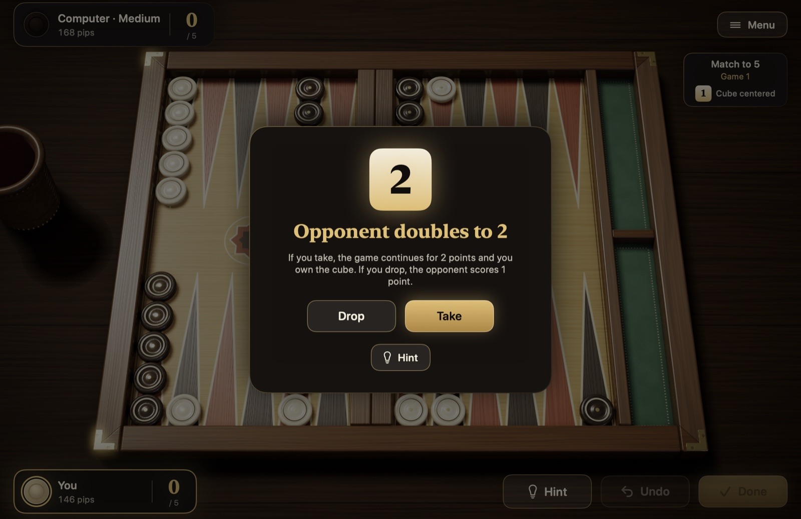
Figure 5.4Coach card. The move played is 0.09 points behind the best; the arrows in the diagram show the better move, and the line with the bulb icon gives the reason.
The Coach card, the move analysis, the review panel and the share card also say in one sentence why the better move is better; the sentence sits on the line that starts with a bulb icon, for example “The best move hits a checker and makes the 5-point.” The app compares where the two moves leave the board and counts only the differences in the best move’s favor, at most two of them: hitting, the number of blots and shots left, a new made point or anchor, the length of the prime, back checkers escaping or the opponent’s being held, made points in the home board, the number of checkers borne off, gammon chances and gammon risk. If another candidate is selected in the review, the sentence is built relative to that move.
The “Gameplay” section of Settings has options that make your turn easier; all of them are on by default except the “Hint” and “Undo” buttons and “Coach”:
Roll automatically: When it’s your turn, the dice are rolled for you. On turns when you could double, it waits; the cube decision is yours. When this is off, you roll every turn yourself with the “Roll Dice” button or the Space bar.
Auto-confirm moves: Your turn ends by itself with your last step. When this is off, you end your turn with the “Done” button (Return); if “Undo” is on, you can take steps back until then.
Play forced moves automatically: If there is only one legal move, the app plays it and your turn ends.
Highlight movable checkers and Show target rings: Turn the glowing checkers and the green rings on or off. With the rings off, a target ring appears only on a target you pick with the keyboard.
Show the Hint button and Show the Undo button: Both are off by default: you can’t ask for a suggestion or take back a step you’ve played. When you turn them on, the buttons appear at the bottom right and the ⌘I and ⌘Z shortcuts work too. While “Undo” is off, a suggestion can be asked for only before your first step.
Coach: Off by default. When you turn it on, a “Warning threshold” option appears below it: “All mistakes” or “Only blunders.” Details above.
5.4 Doubling and responding to a double
You can double only under international rules. When it’s your turn and the cube is in the middle or yours, press the “Double” button (⌘D) before you roll. The button shows the value the cube will go to, for example “Double ×2.” The computer answers at once: if it takes, the cube passes to it and the game goes on; if it drops, you win the game.
When the computer doubles, a card appears on the screen:
Figure 5.5The cube offer card.
Take: The game goes on at twice the value, and the cube passes to you.
Drop: You give up the game; your opponent scores as many points as the cube was worth before the offer.
Beaver: Appears in a session when “Beaver” is on. You take the double and immediately turn the cube one level higher, and the cube stays with you.
Hint: Appears if “Show the Hint button” is on in Settings; shows the Master engine’s suggestion for your decision.
If you double and the computer beavers, a similar card appears: you take, you drop or, if “Raccoon” is on, you turn the cube one level higher again.
The cube’s value and who owns it are shown below the match info at the top right: “Cube centered,” “Cube yours” or “Cube theirs.” In a match, the cube is not used in the first game played once one side is 1 point away from the target, and that spot then reads “Crawford game.”
5.5 Resigning and ending a session
During a game, choose “Resign” from the Game menu or the pause card. On the card, you propose how many points to resign for: single, gammon or, under international rules, backgammon. Below each option, the card tells you in advance whether your opponent will accept. Your opponent refuses an offer below what the position promises, and the game goes on; the match score and the cube are taken into account too. Levels that can’t happen don’t appear on the card: once you’ve started bearing off, a gammon or backgammon is no longer possible, and in a match you aren’t offered anything above the level that already wins your opponent the match.
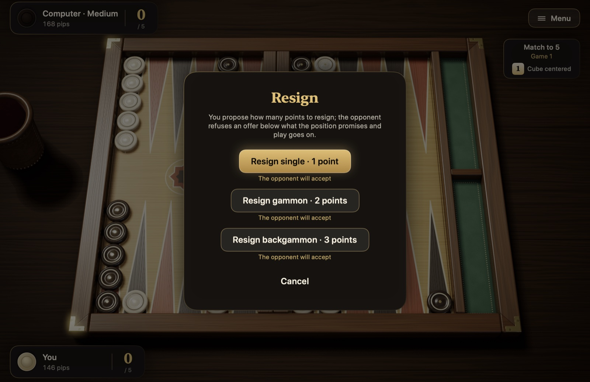
Figure 5.6The Resign card.
The computer may also resign on its own in a hopeless race.
A session can only be chosen under international rules; Turkish tavla doesn’t have one. A session has no match length; you end it yourself with “End Session.” If you end it between games, from the end-of-game card, the session ends at once. If you want to end it during a game, you resign the game in progress; if your opponent accepts, the game’s points are recorded and the session ends. The session’s result goes into the archive and the statistics.
5.6 Pausing and resuming a match later
The “Menu” button at the top right, or Esc, pauses the game; press Esc again and the game resumes. The pause card has “Resume,” “Settings,” “How to Play,” “Move History,” “Matches,” “Resign” and “Leave Match.” At the bottom, the position and match IDs of the current position are shown in GNU Backgammon format; “Copy IDs” copies both to the clipboard and “Share” shares the position as an image; both are described in section 5.8. “Save to Library” adds the position to the library (section 5.12).
Matches are saved automatically. With “Leave Match” you can go back to the main menu and quit the app; “Continue” on the main menu reopens the last match where you left off. If you have more than one match, the “Matches” card lists the matches in progress and an archive of finished matches. You return to a match in progress with “Resume,” remove one you don’t want with “Delete” and watch a finished match again with “Replay,” starting from its first game; the move history button opens its games and turns so you can replay from the game you choose. Each row also shows the match’s rule set and any optional rules that are on. The card’s “Inspect Position from Clipboard” row sets up on the board a position ID you have copied in GNU Backgammon format (with the match ID, if any) when you press “Show on Board”; the Master engine evaluates the position, see section 5.8.
Matches played in other programs can enter the archive too: the “Import…” button on the “Matches” card reads Jellyfish and XG .mat files, XG’s own .xg files and GNU Backgammon .sgf files. Since the file does not say which player you are, the app shows the two players’ names and asks “Which player are you?”; results and analysis are shown from that player’s point of view. A game that contains an illegal move is cut off at that turn, and the number of games cut is reported. An imported match is listed in the archive with the “Imported” tag and the names from the file, and can be replayed with “Replay”; when the archive is full and older matches are deleted, imported ones stay. Every game in the archive, your own matches included, can be analyzed later by the Master engine with the “Analyse” button in the move history; mistakes, candidates and dice luck are reviewed as in section 5.7. “Analyse All” on the “Finished matches” heading goes through every game not yet analyzed, one after another, in the background; the progress is shown on the same line, and the × button stops it. Once a match has been analyzed, its row shows an approximate PR value; the Statistics card gathers these values into the PR trend (section 5.7).
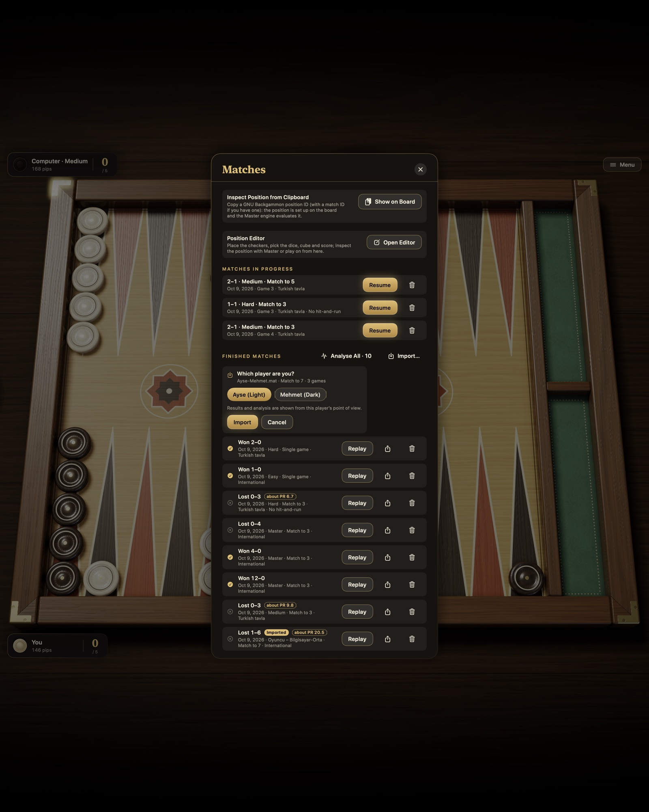
Figure 5.7Importing. A .mat file has been read on the “Matches” card: you are asked which of the two players in the file you are; below, the matches in the archive.
5.7 End of game, analysis and statistics
When a game ends, a card shows the result: the points won, the reason for a gammon or backgammon, the match score and a summary of the game. The summary lists the time, both sides’ average roll, dice luck, the hints you used and, if the Coach warned you, how many times; dice luck is computed once the analysis is done, from the actual value of the rolls in their positions (below). When the match is over, “New Match” on the card starts a new match with your last choices, without opening the panel; a summary of the match about to start appears below the button.
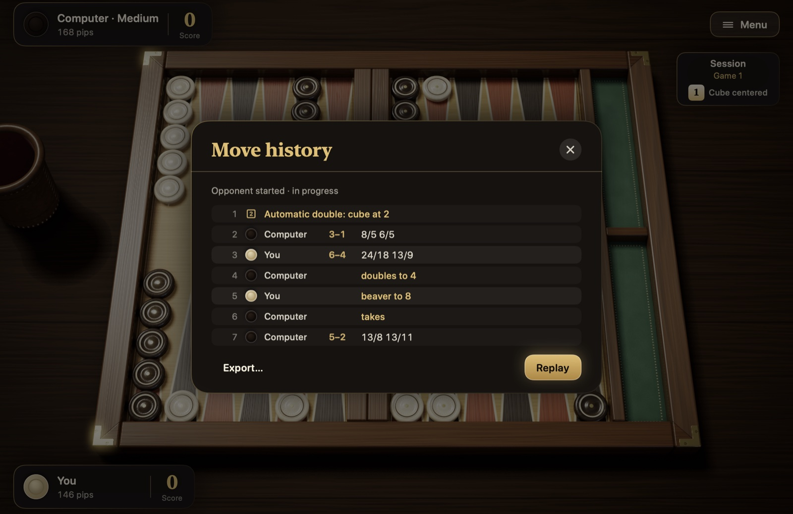
Figure 5.8The end-of-game card.
The “Game grade” in the middle of the card comes from the Master engine’s review of your decisions in the game; next to it are an approximate PR value and the number of mistakes. “Details” opens the analysis card. The “Dice luck” section at the top gives both sides’ total luck, the net luck, and your luckiest and unluckiest rolls. A roll’s luck is the difference, in points, between the value of the best move that roll allows and the average over the 21 possible rolls; more than 0.3 points counts as lucky or unlucky, more than 0.6 as very lucky or very unlucky, and is marked with an icon next to the dice in the move history. Below, the decisions that cost more than 0.02 points against the best option are listed: a small diagram shows the position at the moment of the decision and the arrows of the better move, with the move you played, the better one and the loss beside it. “Candidates” opens up to the five best moves for that turn with their losses. Cube decisions are included too. When the match is over, a grade for the match is also given. “Add to Flashcards” turns the checker-play mistakes in the list into flashcards that you study with spaced repetition; blunders become flashcards automatically once the analysis is done (section 5.12).
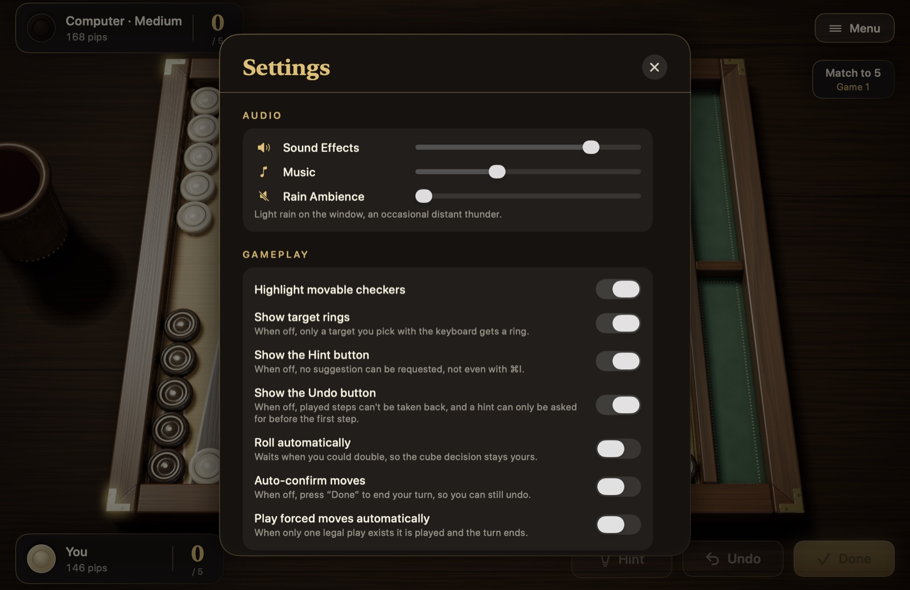
Figure 5.9Move analysis.
“Show on Board” takes the decision to the board: the position is set up as it was at that moment, the best move is marked with checkers and target rings, and the review panel opens: to the right of the board in a landscape window, below it in a portrait window. Among the panel’s chips, “Position” returns to the marked position; “Best,” “Played” and the other candidates animate that move on the board, and each chip shows the move’s loss against the best. For cube decisions the chips show the options and their losses; nothing is played on the board. With the arrows, or ← and →, you go to the previous and next mistake; with Space you cycle through the position, the best move and the move you played. “Copy IDs” and “Share” take the position outside, both in section 5.8; “Save to Library” adds the position to the library (section 5.12); “Back to Analysis” returns to the card and “Close” ends the review.
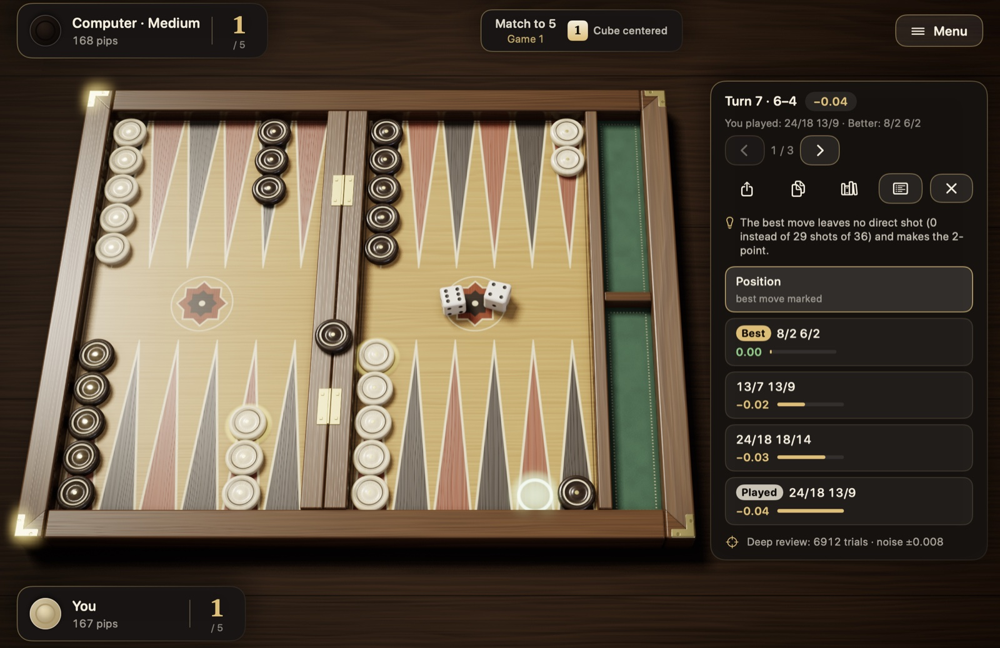
Figure 5.10Review panel, after Deep Review. The move played is 0.04 points behind the best; the “Position” chip is selected and the best move is marked on the board; the line with the bulb icon gives the reason, and the bottom line shows the number of trials and the noise margin.
The “Deep Review” button on the panel re-evaluates that decision’s candidates with far more simulation: a simulation of 6912 trials per candidate is added to Master’s 3-ply search, and the two are averaged. The simulation runs in two independent seed halves, in blocks; the noise margin computed from the spread of the blocks is shown beside the result. The losses and the order of the candidates are updated to the new values; if the difference between two candidates is smaller than the noise margin, both are playable. It takes a second or two on a Mac and a little longer on an iPad; progress is shown in the panel.
The “Full Rollout” menu on the panel plays the candidates out to the end of the game. In the menu you first choose the ply at which moves are picked, then the number of trials: “1-ply” is fast, and the moves in the simulation are picked by the fast network’s direct evaluation (648, 1296 or 2592 trials); “2-ply” looks at the opponent’s 21 possible rolls at every move and takes about three times as long (648 or 1296 trials). All the candidates are played with the same dice sequences; because variance reduction subtracts the luck of each roll from the result, a narrow noise margin is reached with few trials. The result line shows the number of trials, the ply and the largest noise margin among the candidates; the losses and the order are updated to the new values. Deep Review is faster; Full Rollout is for when you need precision.
With the buttons at the bottom of the end-of-game card, you open the move history, replay the game, share the result as an image, return to the main menu or go on to the next game.
The “Statistics” card on the main menu shows the numbers of matches and games won and played, your win rate, the gammons you’ve won and conceded, your best winning streak, results by level, the dice distribution (how often each face came up, with the expected count per face), your PR trend (the approximate PR values of the analyzed matches in the archive as a line from oldest to newest; below it, the latest value, the best and the average of the last five matches), the daily position results (positions solved, streak, best streak and average loss; section 5.12) and recent matches. Sessions played and net points in sessions are kept separately. “Reset Statistics” lets you start over.
The card’s “Achievements” section lists twenty badges: first win, ten and a hundred wins, first match, a match of 7 points or more, gammon, backgammon, a game won with the cube at 4 or higher, a game and a match against Master, an error-free game, a low PR, a five-game winning streak, a hundred games, solving the daily position at the first attempt and on seven and on thirty days in a row, importing a match file, analyzing a game from the archive and putting a decision through Deep Review. Earned badges appear in gold with their date, the others faded with their condition; when you earn an achievement, a short notice appears at the top of the screen. Achievements are kept only on this device, even with iCloud sync on; the app has no server of its own and asks for no account.
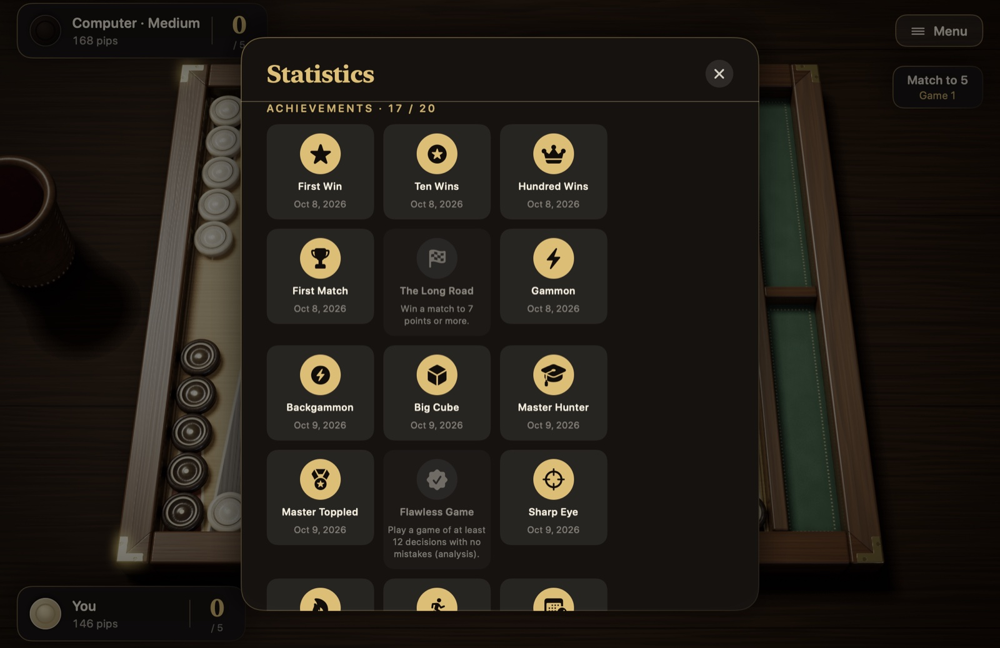
Figure 5.11The Achievements section of the Statistics card. Earned badges in gold with their date, the others faded with their condition.
5.8 Move history, replay and export
“Move History” (⌘L) lists every turn of both sides, along with doubling and resignation events. If the match has more than one game, you choose the game with the buttons at the top.
Figure 5.12Move history. The history of a session: rows for an automatic double, turns with their dice, a double, a beaver and a take.
With “Replay” you can watch a finished game from the beginning with the real animations: ← and → step between turns, and Space plays and pauses. If the match has more than one game, the top line of the panel shows the game number and the score at the start of that game; the arrows beside it switch to the previous and next game, and after a game's last turn → moves to the start of the next game, while before its first turn ← goes to the end of the previous one. “Export…” saves the match record in three formats: readable text (.txt), the .mat format read by Jellyfish and XG, and GNU Backgammon’s .sgf format. That way you can also study your match in these programs; their records, in turn, come in with “Import…”, section 5.6.
Every position has two IDs in GNU Backgammon format: the 14-character position ID carries where the checkers are, the 12-character match ID the score, the cube, whose turn it is and the dice. The pause card shows both; “Copy IDs” there and in the review panel copies both to the clipboard. Paste the IDs into GNU Backgammon or another program that reads this format to set up the exact same position there, or post them on a forum to ask others. It works the other way too: an ID you have copied is set up on the board with “Inspect Position from Clipboard” on the “Matches” card, and you see the Master engine’s evaluation and, if the match ID has dice, the best moves in the review panel. The “Share” button (on the pause card, in the review panel and on the end-of-game card) shares the position or the result as an image: a board diagram, the score and explanatory lines, with the IDs and the app’s web page underneath. You can send the image from the share menu by Messages, Mail or AirDrop.
5.9 Settings
You can reach Settings from the main menu or from the pause card. Changes take effect immediately.
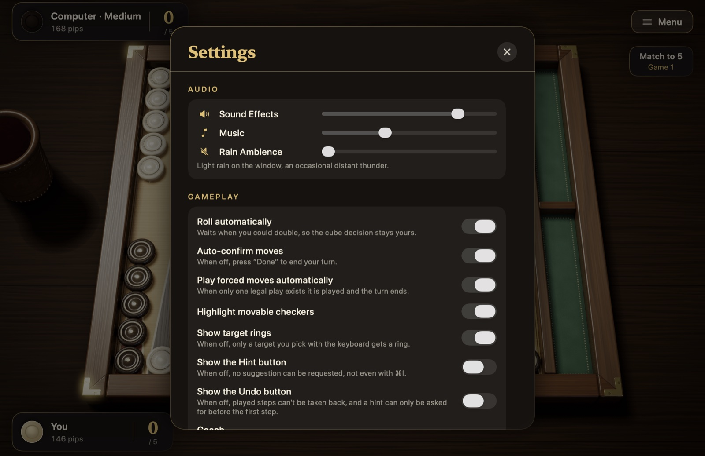
Figure 5.13Settings.
Audio: Separate levels for sound effects, music and the sound of rain on the window.
Gameplay: Automatic rolling, auto-confirm and forced moves, movable checkers, target rings, the Hint and Undo buttons, Coach and warning threshold; details in section 5.3. The rules are not in Settings: the two traditional Turkish tavla rules are chosen in the New Match panel.
Speed: Animation speed and opponent think time. With “Dice cup” off, the dice are rolled without the cup and rolling is quicker.
Appearance: Board (“Classic Walnut,” “Mother-of-Pearl,” “Maple,” “Ebony Night,” “Olive Oak”), checkers (“Boxwood & Ebony,” “Marble & Onyx,” “Red & Black Lacquer”), dice (“Ivory,” “Ebony,” “Amber”) and felt (“Green,” “Burgundy,” “Navy”). The checker and dice styles change the sound too, and the checker icons on the screen take on the colors of the checker style you choose. “Home board on the left” mirrors the board, and the checkers are borne off to the left. “Point numbers” prints your numbering on the rails.
Camera: Cinematic camera (a push-in at the start of a match, a descending orbit at the end), zoom and camera tilt.
Language and text: Turkish, English, French, German, Spanish, Portuguese, Italian, Greek and Russian. With “System” selected, the system language is used. Text size can be “System,” “Normal,” “Large” or “Larger”; “System” follows the system text size setting.
iCloud: With “Sync with iCloud” on, your matches in progress, the archive, the library and your flashcards sync through your iCloud Drive between your devices on the same Apple account; statistics and achievements are kept separately on each device. It is off by default. The line below it shows the last sync, and “Sync Now” syncs without waiting. iCloud is only available in the App Store version; if iCloud Drive is off, the line says so.
5.10 Keyboard shortcuts
Every move on the board can be played with the keyboard, without using the mouse.
Table 5.1 Keyboard shortcuts
Key
What it does
Space
Rolls the dice when a roll is waiting; confirms the turn when auto-confirm is off; in a replay, plays and pauses; in a review, cycles through the position, the best move and the move you played
Return
Moves the checker to the target chosen with the keyboard; confirms the turn when auto-confirm is off
Tab, ⇧Tab
Cycles through the checkers you can move
Arrow keys
Cycle through the selected checker’s targets
Esc
Pauses, and resumes the game when pressed again; closes an open card
⌘Z
Undoes the last step; works when the “Undo” button is on
⌘I
Hint; works when the “Hint” button is on
⌘D
Doubles
⌘L
Opens the move history
⌘N
New match; asks first while a match is in progress, between games too
⌘?
Opens the “How to Play” card
← →
Previous and next turn in a replay; previous and next mistake in a review
5.11 Accessibility
Screen reader: The board can be played with VoiceOver. The points, the bar, the borne-off checkers and the dice are separate elements; for each one, VoiceOver reads out whose checkers are there and how many, and whether it is movable, selected or a target. Your dice, your opponent’s moves and hit checkers are announced aloud.
Reduced motion: If “Reduce motion” is on in macOS, camera animations, menu sway and parallax, the dice cup, checker bounces and the gold rain are turned off.
Contrast: If the “Increase contrast” setting is on in macOS, the interface’s text and lines are drawn more distinctly.
Text size: The default “System” option follows the system text size setting (on the Mac in System Settings under Accessibility, Display; on iPad under Display & Brightness); in Settings you can also choose “Large” or “Larger.” Cards and indicators grow to match.
Keyboard: Every move on the board can be played with the keyboard; the keys are in Table 5.1.
5.12 Practice: daily position, flashcards, openings, library and position editor
The “Practice” card on the main menu brings five practice tools together: “Daily Position,” “Flashcards,” “Opening Library,” “Library” and “Position Editor.”
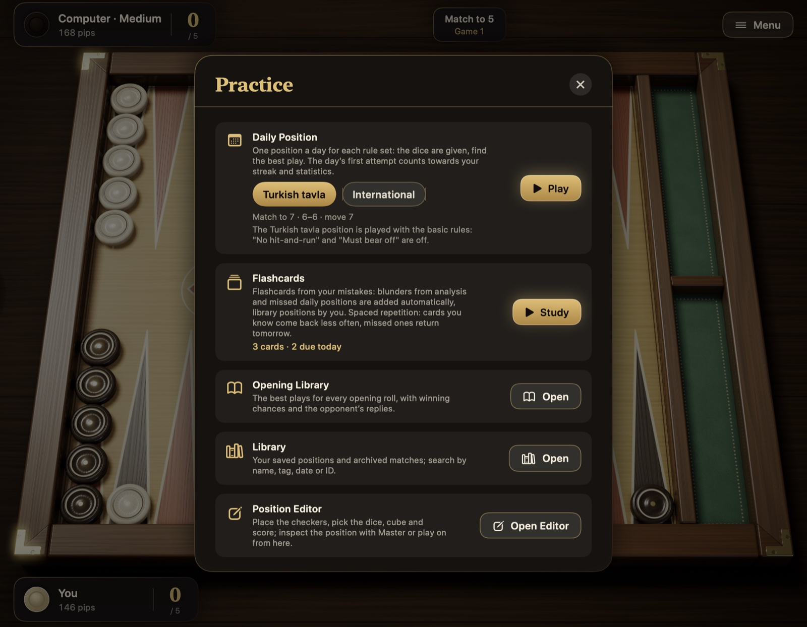
Figure 5.14Practice card: the daily position tile (rule chips, match length, score and move number), the flashcards (deck summary), the opening library, the library and the position editor.
Daily Position. A new position arrives every day; on a given day everyone solves the same position. The position comes separately for each rule set: the tile opens with the rules chosen in New Match and switches with the “Turkish tavla” and “International” chips; the Turkish tavla position is played with the basic rules, with “No hit-and-run” and “Must bear off” off. The dice are given, and you find the best move. The tile shows the match length, the score and the move number; “Play” sets the position up on the board, and you play your move. When the turn ends, a result card appears: if your move was the best, it says “Right move!”, otherwise “There was a better move” or “Blunder”; below are a diagram of the position with the arrows of the best move, the move you played and the best move, and a sentence explaining why. “Show on Board” opens the candidates in the review panel, “Try Again” asks the same position once more, and “Finish” returns to the main menu. Only the first attempt of the day counts, in whichever rule set: if you find the right move your streak grows by a day, if not the streak resets; retries do not count toward the streak or the statistics. The Practice card shows whether you have solved today’s position and your streak, and, if you missed it, your loss against the best move; the number of positions solved, the streak, the best streak and the average loss are on the Statistics card.
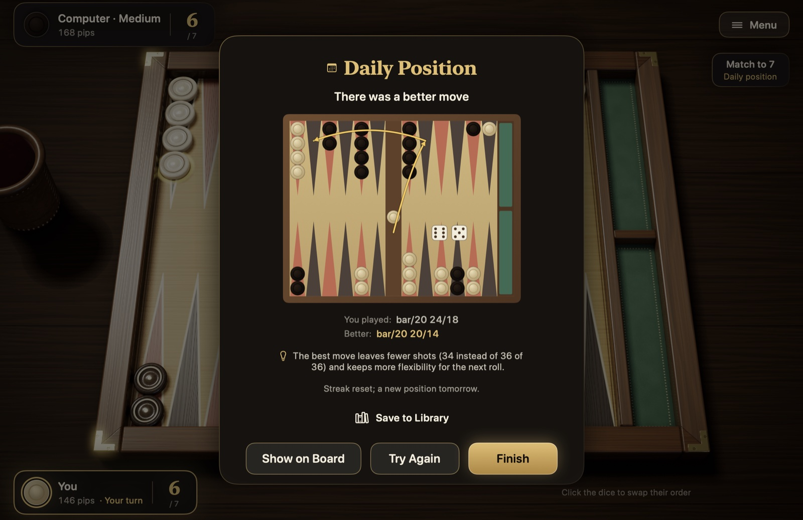
Figure 5.15Result card of the daily position. The move played is behind the best: the arrows in the diagram show the best move, the lines below it the move played and the best move, and the sentence with the bulb icon the reason.
Flashcards. A deck builds up from your mistakes: blunders from the end-of-game analysis and daily positions you missed become flashcards automatically; “Add to Flashcards” on the analysis card adds your other checker-play mistakes, and the flashcard button in the row of a library position that has dice adds that position. Each flashcard is a question: the position and the dice are given, and you find the best move. The tile shows how many flashcards are in the deck, how many are due today or when the next one comes up, and how many are mastered. “Study” asks the flashcards that are due (at most twenty) one after another; if none are due, it asks the ten due soonest ahead of time. You play a flashcard just like the daily position; the result card shows which flashcard you are on, how many you’ve gotten right and when this one will be asked again, and “Next Card” moves on to the next one. Spaced repetition: a flashcard you get right comes back after one day, then after six days, then at ever longer intervals; a flashcard you miss comes back the next day. A flashcard whose interval exceeds three weeks counts as mastered. Flashcard study does not count toward the daily position statistics or streak.
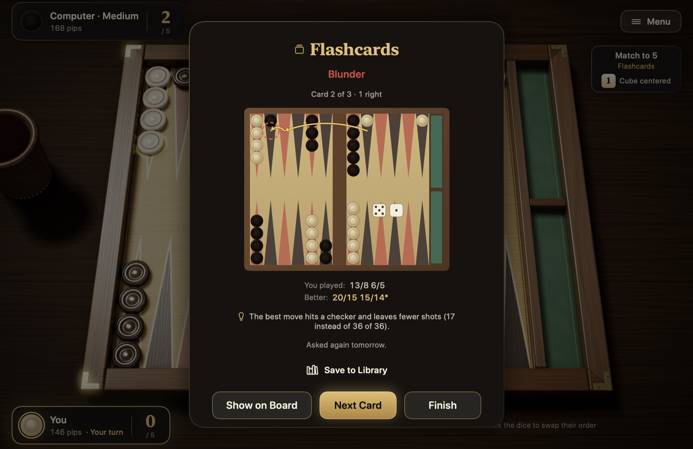
Figure 5.16Result card of flashcard study: at the top, which flashcard this is and how many are right; below, the day the flashcard will be asked again.
Opening Library. For each of the twenty-one opening rolls it lists the best moves, with their loss against the best and their winning and gammon chances. The values are the average of Master’s 3-ply search and a simulation of 5184 trials played out to the end of the game; the chances come from the simulation. The chips at the top choose the rule set: under international rules there is no opening with doubles, under Turkish tavla there is. Selecting a roll shows the best move in the diagram; “Opponent’s replies” opens the best reply to each of the opponent’s rolls after that move. “Set Up on Board” sets the opening position up with that roll in review mode: the candidates are animated on the board, and this is how you practice the opening moves of section 4.3.
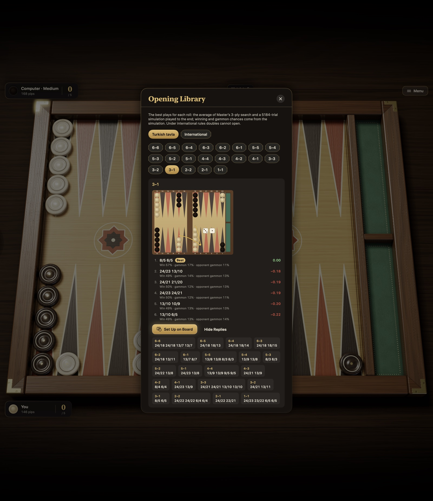
Figure 5.17Opening Library: rule set, the 21 opening rolls, the diagram of the best move for 3-1, the candidates with winning and gammon chances, and the opponent’s replies below.
Library. The positions you have saved and the matches in the archive are gathered on a single card. You add a position with “Save to Library” on the pause card, in the review panel, in the position editor or on the daily position’s result card; the same position is never added twice, and the button changes to “In the library.” Each row of the “Positions” tab shows the position’s name, its date, where it came from, the match and dice details, its tags and its note: with the pencil you change the name, the tags (comma-separated) and the note, and with the trash can you delete the position; “Open on Board” sets the position up in the review panel, where the Master engine evaluates it. The “Matches” tab lists the archive: it separates matches won and lost, shows the approximate PR value of analyzed matches, and “Replay” lets you watch a match again. The search box looks through names, tags, notes, dates and IDs; the chips separate Turkish tavla from international rules.
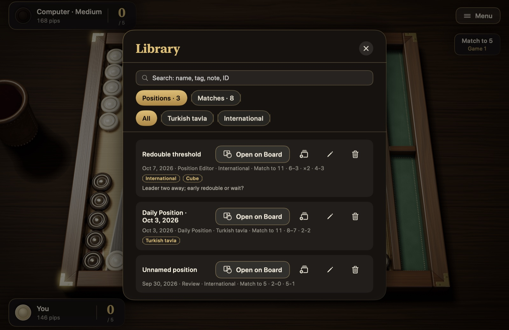
Figure 5.18Library: search box, positions and matches tabs, rule chips; for each position, the Open on Board, flashcard, edit and delete buttons beside its name, and below it the date, source, match details, tags and note.
Position Editor. You set up any position you like by hand; you reach the editor from the “Practice” card or with “Open Editor” on the “Matches” card. Pick the “Place light checker,” “Place dark checker” or “Remove” tool and click the points and the bar on the board (on an iPad you tap); on a Mac a right click removes a checker. Each side has at most 15 checkers, checkers not on the board count as borne off, and no checker can be placed on a point held by the opponent. Below, you choose whose turn it is, the dice (“No dice” is possible too), the cube’s value and owner, the match length, the score and whether the Crawford game has been played. “Start position” sets up the opening arrangement, “Clear” empties the board, “Swap sides” sets the position up from the opponent’s point of view, and “Paste” reads a position ID from the clipboard. “Inspect” opens the position in the review panel: you see the Master engine’s evaluation and, if you gave dice, the best moves. “Play” starts a free game from the position; a free game is not saved and does not enter the statistics or the archive. For a position that cannot be set up, both buttons are disabled and the reason is shown: when one side has borne off all its checkers, or when the score has reached the match length.
Chapter 6
Reference
This chapter is for reference: frequently asked questions, a glossary and an index. The “See” column of the glossary takes you to the sections where each term is explained.
6.1 Frequently asked questions
I rolled badly. Can I pass? No. If the dice allow a move, you must make it. A pass happens on its own, and only when no die can be played.
Can I move my opponent’s checkers? No. Each player moves only their own checkers.
After hitting a checker, can I carry on with the same checker? Under the international rule, yes: hitting doesn’t end the checker’s journey, and you can move it on with the remaining die. In the common form of Turkish tavla, however, hit-and-run in your own home board is forbidden. In Checkers and Dice, when you play by Turkish rules, this restriction applies if “No hit-and-run” was selected for the new match; it is off by default.
What is the most checkers a point can hold? There is no limit. You can stack as many checkers as you like on a point of your own.
Can I start bearing off while I have a checker on the bar? No. To bear off, all your checkers must be in your home board; a checker on the bar counts as outside it.
Do I have to add the two dice together and play them with one checker? No. You can also give the two dice to two different checkers. If you play them with one checker, the intermediate point must be open.
Can a game end in a draw? No. Because players take turns, one of them always finishes first.
I had to break a point in my own home board. Was that a mistake? Not always. Sometimes the dice leave you no other option; the forced-move rule comes before everything else.
I moved a checker by mistake in Checkers and Dice. What should I do? With the default settings, a step you’ve played can’t be taken back. To be able to undo, turn on “Show the Undo button” in Settings; you can then take back that turn’s steps until the turn ends. While “Auto-confirm moves” is on, the turn ends with your last step; if you turn that off too, you can undo until you press “Done.”
Why did my pip count suddenly go up? One of your checkers has been hit. A checker sent to the bar goes back to the start of the route, so your pip count rises by the distance that checker has lost.
Are the dice rigged? No. The dice are rolled on this device by the operating system's random number generator; both sides use the same generator and nothing is adjusted by difficulty level. In short runs, back-to-back doubles or bad rolls are normal; over time the distribution evens out. The Statistics card shows how often each face came up, side by side with the expected count per face.
Can I review a match I played in another program in Checkers and Dice? Yes. You bring a Jellyfish or XG .mat file, an XG .xg file or a GNU Backgammon .sgf match record into the archive with “Import…” on the “Matches” card; you replay its games and have the Master engine analyze them with “Analyse.” Details in section 5.6.
Can I set up a position myself and ask about it? Yes. With the “Position Editor” on the “Practice” card you set up the checkers, the dice, the cube and the score, and with “Inspect” you see the Master engine’s evaluation and the best moves; details in section 5.12.
Do my matches carry over between my Mac and my iPad? If you want them to. With “Sync with iCloud” on in Settings, your matches in progress, the archive, the library and your flashcards sync through your iCloud Drive between your devices on the same Apple account; statistics and achievements stay separate on each device. Syncing is off by default and is only available in the App Store version.
6.2 Glossary and index
Table 6.1 Glossary and index
Term
Meaning
See
Achievement
One of twenty rewards earned by reaching a goal in the game, shown as a badge on the Statistics card
A position that comes to everyone each day, separately for each rule set: the dice are given and the best move is sought; the day’s first attempt counts toward the streak and the statistics
If you’ve come this far, you now know all the rules of backgammon, the basic plans and every corner of Checkers and Dice. The rest is learned at the board. Play your first matches on “Easy”; look over the analysis of the games you lose to see which decisions cost you points, then raise the level. The dice smile on you sometimes and on your opponent at other times; in the long run, your choices make the difference.
For five thousand years, backgammon has been bringing people together on either side of a table. I hope Checkers and Dice will be a small contribution to this tradition and bring you many enjoyable hours. Your feedback and suggestions help make the app better.